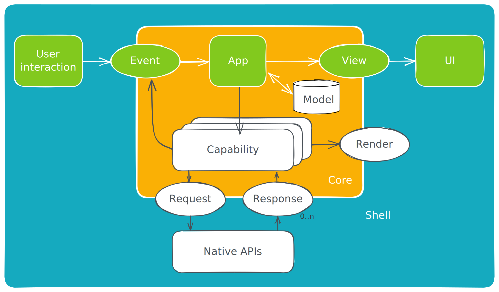
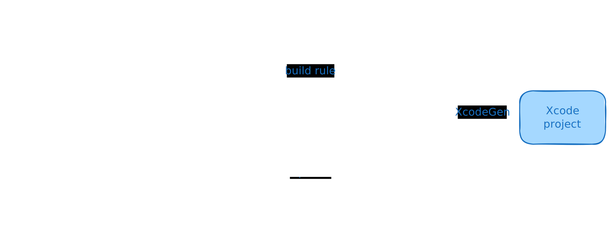
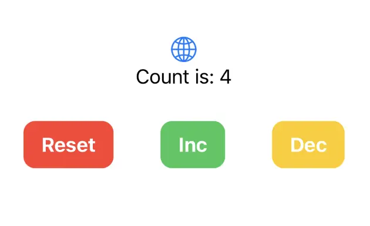
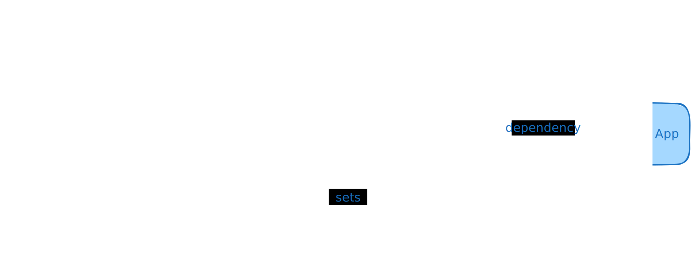
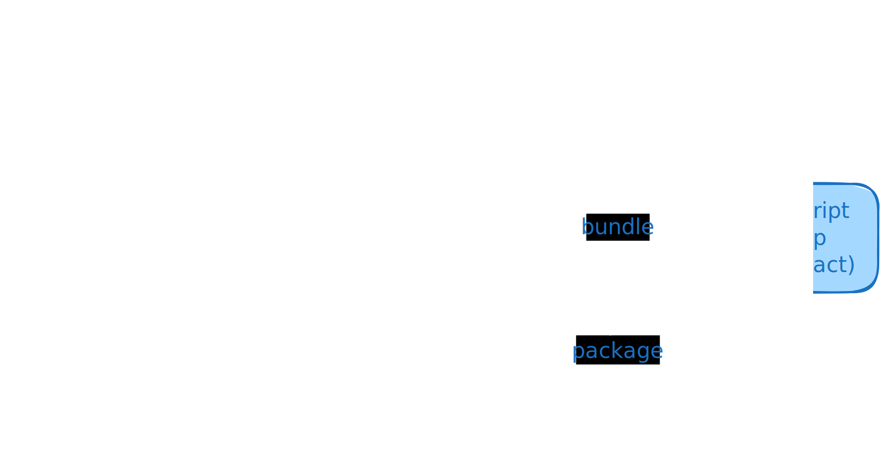

Overview
Crux is a framework for building cross-platform applications with better testability, higher code and behavior reuse, better safety, security, and more joy from better tools.
It splits the application into two distinct parts, a Core built in Rust, which drives as much of the business logic as possible, and a Shell, built in the platform native language (Swift, Kotlin, TypeScript), which provides all interfaces with the external world, including the human user, and acts as a platform on which the core runs.

The interface between the two is a native FFI (Foreign Function Interface) with cross-language type checking and message passing semantics, where simple data structures are passed across the boundary.
To get playing with Crux quickly, follow the Getting Started steps. If you prefer to read more about how apps are built in Crux first, read the Development Guide. And if you'd like to know what possessed us to try this in the first place, read about our Motivation.
There are two places to find API documentation: the latest published version on docs.rs, and we also have the very latest master docs if you too like to live dangerously.
- crux_core - the main Crux crate: latest release | latest master
- crux_http - HTTP client capability: latest release | latest master
Crux is open source on Github. A good way to learn Crux is to explore the code, play with the examples, and raise issues or pull requests. We'd love you to get involved.
You can also join the friendly conversation on our Zulip channel.
Design overview

The architecture is event-driven, based on event sourcing. The Core holds the majority of state, which is updated in response to events happening in the Shell. The interface between the Core and the Shell is message-based.
The user interface layer is built natively, with modern declarative UI frameworks such as Swift UI, Jetpack Compose and React/Vue or a WASM based framework on the web. The UI layer is as thin as it can be, and all other application logic is performed by the shared Core. The one restriction is that the Core is side–effect free. This is both a technical requirement (to be able to target WebAssembly), and an intentional design goal, to separate logic from effects and make them both easier to test in isolation.
The core requests side-effects from the Shell through common capabilities. The basic concept is that instead of doing the asynchronous work, the core describes the intent for the work with data, and passes this to the Shell to be performed. The Shell performs the work, and returns the outcomes back to the Core. This approach is inspired by Elm, and similar to how other purely functional languages deal with effects and I/O (e.g. the IO monad in Haskell). It is also similar to how iterators work in Rust.
The Core exports types for the messages it can understand. The Shell can call the Core and pass one of the messages. In return, it receives a set of side-effect requests to perform. When the work is completed, the Shell sends the result back into the Core, which responds with further requests if necessary.
Updating the user interface is considered one of the side-effects the Core can request. The entire interface is strongly typed and breaking changes in the core will result in build failures in the Shell.
Goals
We set out to find a better way of building apps across platforms. You can read more about our motivation. The overall goals of Crux are to:
- Build the majority of the application code once, in Rust
- Encapsulate the behavior of the app in the Core for reuse
- Follow the Ports and Adapters pattern, also known as Hexagonal Architecture to facilitate pushing side-effects to the edge, making behavior easy to test
- Separate the behavior from the look and feel and interaction design
- Use the native UI tool kits to create user experience that is the best fit for a given platform
Path to 1.0
Crux is used in production apps today, and we consider it production ready. However, we still have a number of things to work on to call it 1.0, with a stable API, and other things one would expect from a mature framework.
Below is a list of some of the things we know we want to do before 1.0:
- Improved documentation, code examples, and example apps for newcomers
- Improved onboarding experience, with less boilerplate code that end users have to deal with
- Better FFI code generation to enable support for more languages (e.g. C#, Dart, even C++...) and in trurn more Shells (e.g. .NET, Flutter) which will also enable Desktop apps for Windows
- Revised capabilities and effects to allow for better, more natural app composition in larger apps, for composing capabilities, and generally for a more ergonomic effect API overall
Until then, we hope you will work with us on the rough edges, and adapt to the necessary API updates as we evolve. We strive to minimise the impact of changes as much as we can, but before 1.0, some breaking changes will be unavoidable.
Motivation
We set out to prove this approach to building apps largely because we've seen the drawbacks of all the other approaches in real life, and thought "there must be a better way". The two major available approaches to building the same application for iOS and Android are:
- Build a native app for each platform, effectively doing the work twice.
- Use React Native or Flutter to build the application once1 and produce native looking and feeling apps which behave nearly identically.
The drawback of the first approach is doing the work twice. In order to build every feature for iOS and Android at the same time, you need twice the number of people, either people who happily do Swift and Kotlin (and they are very rare), or more likely a set of iOS engineers and another set of Android engineers. This typically leads to forming two separate, platform-focused teams. We have witnessed situations first-hand, where those teams struggle with the same design problems, and despite one encountering and solving the problem first, the other one can learn nothing from their experience (and that's despite long design discussions).
We think such experiences with the platform native approach are common, and the reason why people look to React Native and Flutter. The issues with React Native are two fold
- Only mostly native user interface
- In the case of React Native, the JavaScript ecosystem tooling disaster
React Native effectively takes over, and works hard to insulate the engineer from the native platform underneath and pretend it doesn't really exist, but of course, inevitably, it does and the user interface ends up being built in a combination of 90% JavaScript/TypeScript and 10% Kotlin/Swift. This was still a major win when React Native was first introduced, because the platform native UI toolkits were imperative, following a version of MVC architecture, and generally made it quite difficult to get UI state management right. React on the other hand is declarative, leaving much less space for errors stemming from the UI getting into an undefined state. This benefit was clearly recognised by iOS and Android, and both introduced their own declarative UI toolkit - Swift UI and Jetpack Compose. Both of them are quite good, matching that particular advantage of React Native, and leaving only building things once (in theory). But in exchange, they have to be written in JavaScript (and adjacent tools and languages).
The main issue with the JavaScript ecosystem is that it's built on sand. The
underlying language is quite loose and has a
lot of inconsistencies. It came
with no package manager originally, now it
has three. To serve code to the
browser, it gets bundled, and the list of bundlers is too long to include here.
Webpack, the most popular one, is famously difficult
to configure. JavaScript was built as a dynamic language which leads to a lot of
basic human errors, which are made while writing the code, only being discovered
when running the code. Static type systems aim to solve that problem and
TypeScript adds this onto JavaScript, but the
types only go so far (until they hit an any type, or dependencies with no type
definitions), and they disappear at runtime.
In short, upgrading JavaScript to something modern takes a lot of tooling. Getting all this tooling set up and ready to build things is an all day job, and so more tooling, like Next.js has popped up providing this configuration in a box, batteries included. Perhaps the final admission of this problem is the recent Biome toolchain (formerly the Rome project), attempting to bring all the various tools under one roof (and Biome itself is built in Rust...).
It's no wonder that even a working setup of all the tooling has sharp edges, and cannot afford to be nearly as strict as tooling designed with strictness in mind, such as Rust's. The heart of the problem is that computers are strict and precise instruments, and humans are sloppy creatures. With enough humans (more than 10, being generous) and no additional help, the resulting code will be sloppy, full of unhandled edge cases, undefined behaviour being relied on, circular dependencies preventing testing in isolation, etc. (and yes, these are not hypotheticals).
Contrast that with Rust, which is as strict as it gets, and generally backs up
the claim that if it compiles it will work (and if you struggle to get it past
the compiler, it's probably a bad idea). The tooling and package management is
built in with cargo. There are fewer decisions to make when setting up a Rust
project.
In short, we think the JS ecosystem has jumped the shark, the "complexity toothpaste" is out of the tube, and it's time to stop. But there's no real viable alternative. Crux is our attempt to provide one.
In reality it's more like 1.4x effort build the same app for two platforms.
Shared core and types
These are the steps to set up the two crates forming the shared core – the core itself, and the shared types crate which does type generation for the foreign languages.
Most of these steps are going to be automated in future tooling, and published as crates. For now the set up is effectively a copy & paste from one of the example projects.
Install the tools
This is an example of a
rust-toolchain.toml
file, which you can add at the root of your repo. It should ensure that the
correct rust channel and compile targets are installed automatically for you
when you use any rust tooling within the repo.
[toolchain]
channel = "stable"
components = ["rustfmt", "rustc-dev"]
targets = [
"aarch64-apple-darwin",
"aarch64-apple-ios",
"aarch64-apple-ios-sim",
"aarch64-linux-android",
"wasm32-unknown-unknown",
"x86_64-apple-ios"
]
profile = "minimal"
Create the core crate
The shared library
The first library to create is the one that will be shared across all platforms,
containing the behavior of the app. You can call it whatever you like, but we
have chosen the name shared here. You can create the shared rust library, like
this:
cargo new --lib shared
The workspace and library manifests
We'll be adding a bunch of other folders into the monorepo, so we are choosing
to use Cargo Workspaces. Edit the workspace /Cargo.toml file, at the monorepo
root, to add the new library to our workspace. It should look something like
this:
[workspace]
members = ["shared"]
resolver = "1"
[workspace.package]
authors = ["Red Badger Consulting Limited"]
edition = "2021"
repository = "https://github.com/redbadger/crux/"
license = "Apache-2.0"
keywords = ["crux", "crux_core", "cross-platform-ui", "ffi", "wasm"]
rust-version = "1.66"
[workspace.dependencies]
anyhow = "1.0.86"
crux_core = "0.8"
serde = "1.0.203"
The library's manifest, at /shared/Cargo.toml, should look something like the
following, but there are a few things to note:
- the
crate-typelibis the default rust library when linking into a rust binary, e.g. in theweb-yew, orcli, variantstaticlibis a static library (libshared.a) for including in the Swift iOS app variantcdylibis a C-ABI dynamic library (libshared.so) for use with JNA when included in the Kotlin Android app variant
- we need to declare a feature called
typegenthat depends on the feature with the same name in thecrux_corecrate. This is used by this crate's sister library (often calledshared_types) that will generate types for use across the FFI boundary (see the section below on generating shared types). - the uniffi dependencies and
uniffi-bindgentarget should make sense after you read the next section
[package]
name = "shared"
version = "0.1.0"
edition = "2021"
rust-version = "1.66"
[lib]
crate-type = ["lib", "staticlib", "cdylib"]
name = "shared"
[features]
typegen = ["crux_core/typegen"]
[dependencies]
crux_core.workspace = true
serde = { workspace = true, features = ["derive"] }
lazy_static = "1.5.0"
uniffi = "0.28.2"
wasm-bindgen = "0.2.95"
[target.uniffi-bindgen.dependencies]
uniffi = { version = "0.28.2", features = ["cli"] }
[build-dependencies]
uniffi = { version = "0.28.2", features = ["build"] }
FFI bindings
Crux uses Mozilla's Uniffi to generate the FFI bindings for iOS and Android.
Generating the uniffi-bindgen CLI tool
Since version 0.23.0 of Uniffi, we need to also generate the
binary that generates these bindings. This avoids the possibility of getting a
version mismatch between a separately installed binary and the crate's Uniffi
version. You can read more about it
here.
Generating the binary is simple, we just add the following to our crate, in a
file called /shared/src/bin/uniffi-bindgen.rs.
fn main() {
uniffi::uniffi_bindgen_main()
}And then we can build it with cargo.
cargo run -p shared --bin uniffi-bindgen
# or
cargo build
./target/debug/uniffi-bindgen
The uniffi-bindgen executable will be used during the build in XCode and in
Android Studio (see the following pages).
The interface definitions
We will need an interface definition file for the FFI bindings. Uniffi has its
own file format (similar to WebIDL) that has a .udl extension. You can create
one at /shared/src/shared.udl, like this:
namespace shared {
bytes process_event([ByRef] bytes msg);
bytes handle_response(u32 id, [ByRef] bytes res);
bytes view();
};
There are also a few additional parameters to tell Uniffi how to create bindings
for Kotlin and Swift. They live in the file /shared/uniffi.toml, like this
(feel free to adjust accordingly):
[bindings.kotlin]
package_name = "com.example.simple_counter.shared"
cdylib_name = "shared"
[bindings.swift]
cdylib_name = "shared_ffi"
omit_argument_labels = true
Finally, we need a build.rs file in the root of the crate
(/shared/build.rs), to generate the bindings:
fn main() {
uniffi::generate_scaffolding("./src/shared.udl").unwrap();
}Scaffolding
Soon we will have macros and/or code-gen to help with this, but for now, we need
some scaffolding in /shared/src/lib.rs. You'll notice that we are re-exporting
the Request type and the capabilities we want to use in our native Shells, as
well as our public types from the shared library.
pub mod app;
use lazy_static::lazy_static;
use wasm_bindgen::prelude::wasm_bindgen;
pub use crux_core::{bridge::Bridge, Core, Request};
pub use app::*;
// TODO hide this plumbing
uniffi::include_scaffolding!("shared");
lazy_static! {
static ref CORE: Bridge<Effect, Counter> = Bridge::new(Core::new());
}
#[wasm_bindgen]
pub fn process_event(data: &[u8]) -> Vec<u8> {
CORE.process_event(data)
}
#[wasm_bindgen]
pub fn handle_response(id: u32, data: &[u8]) -> Vec<u8> {
CORE.handle_response(id, data)
}
#[wasm_bindgen]
pub fn view() -> Vec<u8> {
CORE.view()
}The app
Now we are in a position to create a basic app in /shared/src/app.rs. This is
from the
simple Counter example
(which also has tests, although we're not showing them here):
use crux_core::{render::Render, App};
use serde::{Deserialize, Serialize};
#[derive(Serialize, Deserialize, Clone, Debug)]
pub enum Event {
Increment,
Decrement,
Reset,
}
#[derive(Default)]
pub struct Model {
count: isize,
}
#[derive(Serialize, Deserialize, Clone, Default)]
pub struct ViewModel {
pub count: String,
}
#[cfg_attr(feature = "typegen", derive(crux_core::macros::Export))]
#[derive(crux_core::macros::Effect)]
pub struct Capabilities {
render: Render<Event>,
}
#[derive(Default)]
pub struct Counter;
impl App for Counter {
type Event = Event;
type Model = Model;
type ViewModel = ViewModel;
type Capabilities = Capabilities;
fn update(&self, event: Self::Event, model: &mut Self::Model, caps: &Self::Capabilities) {
match event {
Event::Increment => model.count += 1,
Event::Decrement => model.count -= 1,
Event::Reset => model.count = 0,
};
caps.render.render();
}
fn view(&self, model: &Self::Model) -> Self::ViewModel {
ViewModel {
count: format!("Count is: {}", model.count),
}
}
}Make sure everything builds OK
cargo build
Create the shared types crate
This crate serves as the container for type generation for the foreign languages.
Work is being done to remove the need for this crate, but for now, it is needed in order to drive the generation of the types that cross the FFI boundary.
-
Copy over the shared_types folder from the simple_counter example.
-
Add the shared types crate to
workspace.membersin the/Cargo.tomlfile at the monorepo root. -
Edit the
build.rsfile and make sure that your app type is registered. In our example, the app type isCounter, so make sure you include this statement in yourbuild.rs
gen.register_app::<Counter>()?;The build.rs file should now look like this:
use crux_core::typegen::TypeGen;
use shared::Counter;
use std::path::PathBuf;
fn main() -> anyhow::Result<()> {
println!("cargo:rerun-if-changed=../shared");
let mut gen = TypeGen::new();
gen.register_app::<Counter>()?;
let output_root = PathBuf::from("./generated");
gen.swift("SharedTypes", output_root.join("swift"))?;
gen.java(
"com.example.simple_counter.shared_types",
output_root.join("java"),
)?;
gen.typescript("shared_types", output_root.join("typescript"))?;
Ok(())
}If you are using the latest versions of the
crux_http (>= v0.10.0), crux_kv (>= v0.5.0) or crux_time (>= v0.5.0)
capabilities, you will need to add a build dependency to the capability crate,
with the typegen feature enabled — so your Cargo.toml file may end up looking something like this
(from the cat_facts example):
[package]
name = "shared_types"
version = "0.1.0"
authors.workspace = true
repository.workspace = true
edition.workspace = true
license.workspace = true
keywords.workspace = true
rust-version.workspace = true
[dependencies]
[build-dependencies]
anyhow.workspace = true
crux_core = { workspace = true, features = ["typegen"] }
crux_http = { workspace = true, features = ["typegen"] }
crux_kv = { workspace = true, features = ["typegen"] }
crux_time = { workspace = true, features = ["typegen"] }
shared = { path = "../shared", features = ["typegen"] }
Due to a current limitation with the reflection library,
you may need to manually register nested enum types in your build.rs file.
(see https://github.com/zefchain/serde-reflection/tree/main/serde-reflection#supported-features)
Note, you don't have to do this for the latest versions of the
crux_http (>= v0.10.0), crux_kv (>= v0.5.0) or crux_time (>= v0.5.0)
capabilities, which now do this registration for you — although you will need to add
a build dependency to the capability crate, with the typegen feature enabled.
If you do end up needing to register a type manually (you should get a helpful error to tell you this),
you can use the register_type method (e.g. gen.register_type::<TextCursor>()?;) as
shown in this
build.rs
file from the shared_types crate of the
notes example:
use crux_core::typegen::TypeGen;
use shared::{NoteEditor, TextCursor};
use std::path::PathBuf;
fn main() -> anyhow::Result<()> {
println!("cargo:rerun-if-changed=../shared");
let mut gen = TypeGen::new();
gen.register_app::<NoteEditor>()?;
// Note: currently required as we can't find enums inside enums, see:
// https://github.com/zefchain/serde-reflection/tree/main/serde-reflection#supported-features
gen.register_type::<TextCursor>()?;
let output_root = PathBuf::from("./generated");
gen.swift("SharedTypes", output_root.join("swift"))?;
// TODO these are for later
//
// gen.java("com.example.counter.shared_types", output_root.join("java"))?;
gen.typescript("shared_types", output_root.join("typescript"))?;
Ok(())
}Building your app
Make sure everything builds and foreign types get generated into the
generated folder.
(If you're generating TypeScript, you may need pnpm to be installed and in your $PATH.)
cargo build
If you have problems building, make sure your Capabilities struct implements the Export trait.
There is a derive macro that can do this for you, e.g.:
#[cfg_attr(feature = "typegen", derive(crux_core::macros::Export))]
#[derive(crux_core::macros::Effect)]
pub struct Capabilities {
render: Render<Event>,
http: Http<Event>,
}The Export and Effect derive macros can be configured with the effect attribute if you need to specify a different name for the Effect type e.g.:
#[cfg_attr(feature = "typegen", derive(Export))]
#[derive(Effect)]
#[effect(name = "MyEffect")]
pub struct Capabilities {
render: Render<Event>,
pub_sub: PubSub<Event>,
}Additionally, if you are using a Capability that does not need to be exported to the foreign language, you can use the #[effect(skip)] attribute to skip exporting it, e.g.:
#[cfg_attr(feature = "typegen", derive(Export))]
#[derive(Effect)]
pub struct Capabilities {
render: Render<Event>,
#[effect(skip)]
compose: Compose<Event>,
}iOS
When we use Crux to build iOS apps, the Core API bindings are generated in Swift (with C headers) using Mozilla's Uniffi.
The shared core (that contains our app's behavior) is compiled to a static
library and linked into the iOS binary. To do this we use
cargo-xcode to generate an Xcode
project for the shared core, which we can include as a sub-project in our iOS
app.
The shared types are generated by Crux as a Swift package, which we can add to our iOS project as a dependency. The Swift code to serialize and deserialize these types across the boundary is also generated by Crux as Swift packages.

This section has two guides for building iOS apps with Crux:
We recommend the first option, as it's definitely the simplest way to get started.
iOS — Swift and SwiftUI — using XcodeGen
These are the steps to set up Xcode to build and run a simple iOS app that calls into a shared core.
We think that using XcodeGen may be the simplest way to create an Xcode project to build and run a simple iOS app that calls into a shared core. If you'd rather set up Xcode manually, you can jump to iOS — Swift and SwiftUI — manual setup, otherwise read on.
This walk-through assumes you have already added the shared and shared_types libraries to your repo — as described in Shared core and types.
Compile our Rust shared library
When we build our iOS app, we also want to build the Rust core as a static library so that it can be linked into the binary that we're going to ship.
We will use cargo-xcode to generate an
Xcode project for our shared library, which we can add as a sub-project in
Xcode.
Recent changes to cargo-xcode mean that we need to use version <=1.7.0 for
now.
If you don't have this already, you can install it in one of two ways:
-
Globally, with
cargo install --force cargo-xcode --version 1.7.0 -
Locally, using
cargo-run-bin, after ensuring that yourCargo.tomlhas the following lines (see The workspace and library manifests):[workspace.metadata.bin] cargo-xcode = { version = "=1.7.0" }Ensure you have
cargo-run-bin(and optionallycargo-binstall) installed:cargo install cargo-run-bin cargo-binstallThen, in the root of your app:
cargo bin --install # will be faster if `cargo-binstall` is installed cargo bin --sync-aliases # to use `cargo xcode` instead of `cargo bin xcode`
Let's generate the sub-project:
cargo xcode
This generates an Xcode project for each crate in the workspace, but we're only
interested in the one it creates in the shared directory. Don't open this
generated project yet, it'll be included when we generate the Xcode project for
our iOS app.
Generate the Xcode project for our iOS app
We will use XcodeGen to generate an Xcode project for our iOS app.
If you don't have this already, you can install it with brew install xcodegen.
Before we generate the Xcode project, we need to create some directories and a
project.yml file:
mkdir -p iOS/SimpleCounter
cd iOS
touch project.yml
The project.yml file describes the Xcode project we want to generate. Here's
one for the SimpleCounter example — you may want to adapt this for your own
project:
name: SimpleCounter
projectReferences:
Shared:
path: ../shared/shared.xcodeproj
packages:
SharedTypes:
path: ../shared_types/generated/swift/SharedTypes
options:
bundleIdPrefix: com.example.simple_counter
attributes:
BuildIndependentTargetsInParallel: true
targets:
SimpleCounter:
type: application
platform: iOS
deploymentTarget: "15.0"
sources:
- SimpleCounter
- path: ../shared/src/shared.udl
buildPhase: sources
dependencies:
- target: Shared/uniffi-bindgen-bin
- target: Shared/shared-staticlib
- package: SharedTypes
info:
path: SimpleCounter/Info.plist
properties:
UISupportedInterfaceOrientations:
- UIInterfaceOrientationPortrait
- UIInterfaceOrientationLandscapeLeft
- UIInterfaceOrientationLandscapeRight
UILaunchScreen: {}
settings:
OTHER_LDFLAGS: [-w]
SWIFT_OBJC_BRIDGING_HEADER: generated/sharedFFI.h
ENABLE_USER_SCRIPT_SANDBOXING: NO
buildRules:
- name: Generate FFI
filePattern: "*.udl"
script: |
#!/bin/bash
set -e
# Skip during indexing phase in XCode 13+
if [ "$ACTION" == "indexbuild" ]; then
echo "Not building *.udl files during indexing."
exit 0
fi
# Skip for preview builds
if [ "$ENABLE_PREVIEWS" = "YES" ]; then
echo "Not building *.udl files during preview builds."
exit 0
fi
cd "${INPUT_FILE_DIR}/.."
"${BUILD_DIR}/debug/uniffi-bindgen" generate "src/${INPUT_FILE_NAME}" --language swift --out-dir "${PROJECT_DIR}/generated"
outputFiles:
- $(PROJECT_DIR)/generated/$(INPUT_FILE_BASE).swift
- $(PROJECT_DIR)/generated/$(INPUT_FILE_BASE)FFI.h
runOncePerArchitecture: false
Then we can generate the Xcode project:
xcodegen
This should create an iOS/SimpleCounter/SimpleCounter.xcodeproj project file,
which we can open in Xcode. It should build OK, but we will need to add some
code!
Create some UI and run in the Simulator, or on an iPhone
There is slightly more advanced example of an iOS app in the Crux repository.
However, we will use the
simple counter example,
which has shared and shared_types libraries that will work with the
following example code.
Simple counter example
A simple app that increments, decrements and resets a counter.
Wrap the core to support capabilities
First, let's add some boilerplate code to wrap our core and handle the
capabilities that we are using. For this example, we only need to support the
Render capability, which triggers a render of the UI.
This code that wraps the core only needs to be written once — it only grows when we need to support additional capabilities.
Edit iOS/SimpleCounter/core.swift to look like the following. This code sends
our (UI-generated) events to the core, and handles any effects that the core
asks for. In this simple example, we aren't calling any HTTP APIs or handling
any side effects other than rendering the UI, so we just handle this render
effect by updating the published view model from the core.
import Foundation
import SharedTypes
@MainActor
class Core: ObservableObject {
@Published var view: ViewModel
init() {
self.view = try! .bincodeDeserialize(input: [UInt8](SimpleCounter.view()))
}
func update(_ event: Event) {
let effects = [UInt8](processEvent(Data(try! event.bincodeSerialize())))
let requests: [Request] = try! .bincodeDeserialize(input: effects)
for request in requests {
processEffect(request)
}
}
func processEffect(_ request: Request) {
switch request.effect {
case .render:
view = try! .bincodeDeserialize(input: [UInt8](SimpleCounter.view()))
}
}
}
That switch statement, above, is where you would handle any other effects that
your core might ask for. For example, if your core needs to make an HTTP
request, you would handle that here. To see an example of this, take a look at
the
counter example
in the Crux repository.
Edit iOS/SimpleCounter/ContentView.swift to look like the following:
import SharedTypes
import SwiftUI
struct ContentView: View {
@ObservedObject var core: Core
var body: some View {
VStack {
Image(systemName: "globe")
.imageScale(.large)
.foregroundColor(.accentColor)
Text(core.view.count)
HStack {
ActionButton(label: "Reset", color: .red) {
core.update(.reset)
}
ActionButton(label: "Inc", color: .green) {
core.update(.increment)
}
ActionButton(label: "Dec", color: .yellow) {
core.update(.decrement)
}
}
}
}
}
struct ActionButton: View {
var label: String
var color: Color
var action: () -> Void
init(label: String, color: Color, action: @escaping () -> Void) {
self.label = label
self.color = color
self.action = action
}
var body: some View {
Button(action: action) {
Text(label)
.fontWeight(.bold)
.font(.body)
.padding(EdgeInsets(top: 10, leading: 15, bottom: 10, trailing: 15))
.background(color)
.cornerRadius(10)
.foregroundColor(.white)
.padding()
}
}
}
struct ContentView_Previews: PreviewProvider {
static var previews: some View {
ContentView(core: Core())
}
}
And create iOS/SimpleCounter/SimpleCounterApp.swift to look like this:
import SwiftUI
@main
struct SimpleCounterApp: App {
var body: some Scene {
WindowGroup {
ContentView(core: Core())
}
}
}
Run xcodegen again to update the Xcode project with these newly created source
files (or add them manually in Xcode to the SimpleCounter group), and then
open iOS/SimpleCounter/SimpleCounter.xcodeproj in Xcode. You might need to
select the SimpleCounter scheme, and an appropriate simulator, in the
drop-down at the top, before you build.
You should then be able to run the app in the simulator or on an iPhone, and it should look like this:

iOS — Swift and SwiftUI — manual setup
These are the steps to set up Xcode to build and run a simple iOS app that calls into a shared core.
We recommend setting up Xcode with XcodeGen as described in the previous section. It is the simplest way to create an Xcode project to build and run a simple iOS app that calls into a shared core. However, if you want to set up Xcode manually then read on.
This walk-through assumes you have already added the shared and shared_types
libraries to your repo — as described in Shared core and types
— and that you have built them using cargo build.
Create an iOS App
The first thing we need to do is create a new iOS app in Xcode.
Let's call the app "SimpleCounter" and select "SwiftUI" for the interface and "Swift" for the language. If you choose to create the app in the root folder of your monorepo, then you might want to rename the folder it creates to "iOS". Your repo's directory structure might now look something like this (some files elided):
.
├── Cargo.lock
├── Cargo.toml
├── iOS
│ ├── SimpleCounter
│ │ ├── ContentView.swift
│ │ └── SimpleCounterApp.swift
│ └── SimpleCounter.xcodeproj
│ └── project.pbxproj
├── shared
│ ├── build.rs
│ ├── Cargo.toml
│ ├── src
│ │ ├── counter.rs
│ │ ├── lib.rs
│ │ └── shared.udl
│ └── uniffi.toml
├── shared_types
│ ├── build.rs
│ ├── Cargo.toml
│ └── src
│ └── lib.rs
└── target
Generate FFI bindings
We want UniFFI to create the Swift bindings and the C headers for our shared
library, and store them in a directory called generated.
To achieve this, we'll associate a script with files that match the pattern
*.udl (this will catch the interface definition file we created earlier), and
then add our shared.udl file to the project.
Note that our shared library generates the uniffi-bindgen binary (as explained
on the page "Shared core and types") that the script relies on, so
make sure you have built it already, using cargo build.
In "Build Rules", add a rule to process files that match the pattern *.udl
with the following script (and also uncheck "Run once per architecture").
#!/bin/bash
set -e
# Skip during indexing phase in XCode 13+
if [ "$ACTION" == "indexbuild" ]; then
echo "Not building *.udl files during indexing."
exit 0
fi
# Skip for preview builds
if [ "$ENABLE_PREVIEWS" = "YES" ]; then
echo "Not building *.udl files during preview builds."
exit 0
fi
cd "${INPUT_FILE_DIR}/.."
"${BUILD_DIR}/debug/uniffi-bindgen" generate "src/${INPUT_FILE_NAME}" --language swift --out-dir "${PROJECT_DIR}/generated"
We'll need to add the following as output files:
$(PROJECT_DIR)/generated/$(INPUT_FILE_BASE).swift
$(PROJECT_DIR)/generated/$(INPUT_FILE_BASE)FFI.h
Now go to the project settings, "Build Phases, Compile Sources", and add /shared/src/shared.udl
using the "add other" button, selecting "Create folder references".
You may also need to go to "Build Settings, User Script Sandboxing" and set this
to No to give the script permission to create files.
Build the project (cmd-B), which will fail, but the above script should run successfully and the "generated" folder should contain the generated Swift types and C header files:
$ ls iOS/generated
shared.swift sharedFFI.h sharedFFI.modulemap
Add the bridging header
In "Build Settings", search for "bridging header", and add
generated/sharedFFI.h, for any architecture/SDK, i.e. in both Debug and
Release. If there isn't already a setting for "bridging header" you can add one
(and then delete it) as per
this StackOverflow question
Compile our Rust shared library
When we build our iOS app, we also want to build the Rust core as a static library so that it can be linked into the binary that we're going to ship.
We will use cargo-xcode to generate an
Xcode project for our shared library, which we can add as a sub-project in
Xcode.
Recent changes to cargo-xcode mean that we need to use version <=1.7.0 for
now.
If you don't have this already, you can install it in one of two ways:
-
Globally, with
cargo install --force cargo-xcode --version 1.7.0 -
Locally, using
cargo-run-bin, after ensuring that yourCargo.tomlhas the following lines (see The workspace and library manifests):[workspace.metadata.bin] cargo-xcode = { version = "=1.7.0" }Ensure you have
cargo-run-bin(and optionallycargo-binstall) installed:cargo install cargo-run-bin cargo-binstallThen, in the root of your app:
cargo bin --install # will be faster if `cargo-binstall` is installed cargo bin --sync-aliases # to use `cargo xcode` instead of `cargo bin xcode`
Let's generate the sub-project:
cargo xcode
This generates an Xcode project for each crate in the workspace, but we're only
interested in the one it creates in the shared directory. Don't open this
generated project yet.
Using Finder, drag the shared/shared.xcodeproj folder under the Xcode project
root.
Then, in the "Build Phases, Link Binary with Libraries" section, add the
libshared_static.a library (you should be able to navigate to it as
Workspace -> shared -> libshared_static.a)
Add the Shared Types
Using Finder, drag the shared_types/generated/swift/SharedTypes folder under
the Xcode project root.
Then, in the "Build Phases, Link Binary with Libraries" section, add the
SharedTypes library (you should be able to navigate to it as
Workspace -> SharedTypes -> SharedTypes)
Create some UI and run in the Simulator, or on an iPhone
There is slightly more advanced example of an iOS app in the Crux repository.
However, we will use the
simple counter example,
which has shared and shared_types libraries that will work with the
following example code.
Simple counter example
A simple app that increments, decrements and resets a counter.
Wrap the core to support capabilities
First, let's add some boilerplate code to wrap our core and handle the
capabilities that we are using. For this example, we only need to support the
Render capability, which triggers a render of the UI.
This code that wraps the core only needs to be written once — it only grows when we need to support additional capabilities.
Edit iOS/SimpleCounter/core.swift to look like the following. This code sends
our (UI-generated) events to the core, and handles any effects that the core
asks for. In this simple example, we aren't calling any HTTP APIs or handling
any side effects other than rendering the UI, so we just handle this render
effect by updating the published view model from the core.
import Foundation
import SharedTypes
@MainActor
class Core: ObservableObject {
@Published var view: ViewModel
init() {
self.view = try! .bincodeDeserialize(input: [UInt8](SimpleCounter.view()))
}
func update(_ event: Event) {
let effects = [UInt8](processEvent(Data(try! event.bincodeSerialize())))
let requests: [Request] = try! .bincodeDeserialize(input: effects)
for request in requests {
processEffect(request)
}
}
func processEffect(_ request: Request) {
switch request.effect {
case .render:
view = try! .bincodeDeserialize(input: [UInt8](SimpleCounter.view()))
}
}
}
That switch statement, above, is where you would handle any other effects that
your core might ask for. For example, if your core needs to make an HTTP
request, you would handle that here. To see an example of this, take a look at
the
counter example
in the Crux repository.
Edit iOS/SimpleCounter/ContentView.swift to look like the following:
import SharedTypes
import SwiftUI
struct ContentView: View {
@ObservedObject var core: Core
var body: some View {
VStack {
Image(systemName: "globe")
.imageScale(.large)
.foregroundColor(.accentColor)
Text(core.view.count)
HStack {
ActionButton(label: "Reset", color: .red) {
core.update(.reset)
}
ActionButton(label: "Inc", color: .green) {
core.update(.increment)
}
ActionButton(label: "Dec", color: .yellow) {
core.update(.decrement)
}
}
}
}
}
struct ActionButton: View {
var label: String
var color: Color
var action: () -> Void
init(label: String, color: Color, action: @escaping () -> Void) {
self.label = label
self.color = color
self.action = action
}
var body: some View {
Button(action: action) {
Text(label)
.fontWeight(.bold)
.font(.body)
.padding(EdgeInsets(top: 10, leading: 15, bottom: 10, trailing: 15))
.background(color)
.cornerRadius(10)
.foregroundColor(.white)
.padding()
}
}
}
struct ContentView_Previews: PreviewProvider {
static var previews: some View {
ContentView(core: Core())
}
}
And create iOS/SimpleCounter/SimpleCounterApp.swift to look like this:
import SwiftUI
@main
struct SimpleCounterApp: App {
var body: some Scene {
WindowGroup {
ContentView(core: Core())
}
}
}
You should then be able to run the app in the simulator or on an iPhone, and it should look like this:
Android
When we use Crux to build Android apps, the Core API bindings are generated in Java using Mozilla's Uniffi.
The shared core (that contains our app's behavior) is compiled to a dynamic library, using Mozilla's Rust gradle plugin for Android and the Android NDK. The library is loaded at runtime using Java Native Access.
The shared types are generated by Crux as Java packages, which we can add to our
Android project using sourceSets. The Java code to serialize and deserialize
these types across the boundary is also generated by Crux as Java packages.

This section has a guide for building Android apps with Crux:
Android — Kotlin and Jetpack Compose
These are the steps to set up Android Studio to build and run a simple Android app that calls into a shared core.
This walk-through assumes you have already added the shared and shared_types libraries to your repo, as described in Shared core and types.
We want to make setting up Android Studio to work with Crux really easy. As time progresses we will try to simplify and automate as much as possible, but at the moment there is some manual configuration to do. This only needs doing once, so we hope it's not too much trouble. If you know of any better ways than those we describe below, please either raise an issue (or a PR) at https://github.com/redbadger/crux.
This walkthrough uses Mozilla's excellent Rust gradle plugin
for Android, which uses Python. However, pipes has recently been removed from Python (since Python 3.13)
so you may encounter an error linking your shared library.
If you hit this problem, you can either:
- use an older Python (<3.13)
- wait for a fix (see this issue)
- or use a different plugin — there is a PR in the Crux repo that
explores the use of
cargo-ndkand thecargo-ndk-androidplugin that may be useful.
Create an Android App
The first thing we need to do is create a new Android app in Android Studio.
Open Android Studio and create a new project, for "Phone and Tablet", of type "Empty Activity". In this walk-through, we'll call it "SimpleCounter"
- "Name":
SimpleCounter - "Package name":
com.example.simple_counter - "Save Location": a directory called
Androidat the root of our monorepo - "Minimum SDK"
API 34 - "Build configuration language":
Groovy DSL (build.gradle)
Your repo's directory structure might now look something like this (some files elided):
.
├── Android
│ ├── app
│ │ ├── build.gradle
│ │ ├── libs
│ │ └── src
│ │ └── main
│ │ ├── AndroidManifest.xml
│ │ └── java
│ │ └── com
│ │ └── example
│ │ └── simple_counter
│ │ └── MainActivity.kt
│ ├── build.gradle
│ ├── gradle.properties
│ ├── local.properties
│ └── settings.gradle
├── Cargo.lock
├── Cargo.toml
├── shared
│ ├── build.rs
│ ├── Cargo.toml
│ ├── src
│ │ ├── app.rs
│ │ ├── lib.rs
│ │ └── shared.udl
│ └── uniffi.toml
├── shared_types
│ ├── build.rs
│ ├── Cargo.toml
│ └── src
│ └── lib.rs
└── target
Add a Kotlin Android Library
This shared Android library (aar) is going to wrap our shared Rust library.
Under File -> New -> New Module, choose "Android Library" and give it the "Module name"
shared. Set the "Package name" to match the one from your
/shared/uniffi.toml, which in this example is com.example.simple_counter.shared.
Again, set the "Build configuration language" to Groovy DSL (build.gradle).
For more information on how to add an Android library see https://developer.android.com/studio/projects/android-library.
We can now add this library as a dependency of our app.
Edit the app's build.gradle (/Android/app/build.gradle) to look like
this:
plugins {
alias(libs.plugins.android.application)
alias(libs.plugins.kotlin.android)
alias(libs.plugins.kotlin.compose)
}
android {
namespace 'com.example.simple_counter'
compileSdk 34
defaultConfig {
applicationId "com.example.simple_counter"
minSdk 34
targetSdk 34
versionCode 1
versionName "1.0"
testInstrumentationRunner "androidx.test.runner.AndroidJUnitRunner"
}
buildTypes {
release {
minifyEnabled false
proguardFiles getDefaultProguardFile('proguard-android-optimize.txt'), 'proguard-rules.pro'
}
}
compileOptions {
sourceCompatibility JavaVersion.VERSION_20
targetCompatibility JavaVersion.VERSION_20
}
kotlinOptions {
jvmTarget = '20'
}
buildFeatures {
compose true
}
}
dependencies {
// our shared library
implementation project(path: ':shared')
// added dependencies
implementation libs.lifecycle.viewmodel.compose
// original dependencies
implementation libs.androidx.core.ktx
implementation libs.androidx.lifecycle.runtime.ktx
implementation libs.androidx.activity.compose
implementation platform(libs.androidx.compose.bom)
implementation libs.androidx.ui
implementation libs.androidx.ui.graphics
implementation libs.androidx.ui.tooling.preview
implementation libs.androidx.material3
testImplementation libs.junit
androidTestImplementation libs.androidx.junit
androidTestImplementation libs.androidx.espresso.core
androidTestImplementation platform(libs.androidx.compose.bom)
androidTestImplementation libs.androidx.ui.test.junit4
debugImplementation libs.androidx.ui.tooling
debugImplementation libs.androidx.ui.test.manifest
}
In our gradle files, we are referencing a "Version Catalog" to manage our dependency versions, so you will need to ensure this is kept up to date.
Our catalog (Android/gradle/libs.versions.toml) will end up looking like this:
[versions]
agp = "8.7.0"
kotlin = "2.0.0"
coreKtx = "1.13.1"
junit = "4.13.2"
junitVersion = "1.2.1"
espressoCore = "3.6.1"
lifecycleRuntimeKtx = "2.8.6"
activityCompose = "1.9.2"
composeBom = "2024.09.03"
# added
jna = "5.15.0"
lifecycle = "2.8.6"
appcompat = "1.7.0"
material = "1.12.0"
rustAndroid = "0.9.4"
[libraries]
androidx-core-ktx = { group = "androidx.core", name = "core-ktx", version.ref = "coreKtx" }
junit = { group = "junit", name = "junit", version.ref = "junit" }
androidx-junit = { group = "androidx.test.ext", name = "junit", version.ref = "junitVersion" }
androidx-espresso-core = { group = "androidx.test.espresso", name = "espresso-core", version.ref = "espressoCore" }
androidx-lifecycle-runtime-ktx = { group = "androidx.lifecycle", name = "lifecycle-runtime-ktx", version.ref = "lifecycleRuntimeKtx" }
androidx-activity-compose = { group = "androidx.activity", name = "activity-compose", version.ref = "activityCompose" }
androidx-compose-bom = { group = "androidx.compose", name = "compose-bom", version.ref = "composeBom" }
androidx-ui = { group = "androidx.compose.ui", name = "ui" }
androidx-ui-graphics = { group = "androidx.compose.ui", name = "ui-graphics" }
androidx-ui-tooling = { group = "androidx.compose.ui", name = "ui-tooling" }
androidx-ui-tooling-preview = { group = "androidx.compose.ui", name = "ui-tooling-preview" }
androidx-ui-test-manifest = { group = "androidx.compose.ui", name = "ui-test-manifest" }
androidx-ui-test-junit4 = { group = "androidx.compose.ui", name = "ui-test-junit4" }
androidx-material3 = { group = "androidx.compose.material3", name = "material3" }
# added
jna = { module = "net.java.dev.jna:jna", version.ref = "jna" }
lifecycle-viewmodel-compose = { module = "androidx.lifecycle:lifecycle-viewmodel-compose", version.ref = "lifecycle" }
androidx-appcompat = { group = "androidx.appcompat", name = "appcompat", version.ref = "appcompat" }
material = { group = "com.google.android.material", name = "material", version.ref = "material" }
[plugins]
android-application = { id = "com.android.application", version.ref = "agp" }
kotlin-android = { id = "org.jetbrains.kotlin.android", version.ref = "kotlin" }
kotlin-compose = { id = "org.jetbrains.kotlin.plugin.compose", version.ref = "kotlin" }
# added
rust-android = { id = "org.mozilla.rust-android-gradle.rust-android", version.ref = "rustAndroid" }
android-library = { id = "com.android.library", version.ref = "agp" }
The Rust shared library
We'll use the following tools to incorporate our Rust shared library into the Android library added above. This includes compiling and linking the Rust dynamic library and generating the runtime bindings and the shared types.
- The Android NDK
- Mozilla's Rust gradle plugin
for Android
- This plugin depends on Python 3, make sure you have a version installed
- Java Native Access
- Uniffi to generate Java bindings
The NDK can be installed from "Tools, SDK Manager, SDK Tools" in Android Studio.
Let's get started.
Add the four rust android toolchains to your system:
$ rustup target add aarch64-linux-android armv7-linux-androideabi i686-linux-android x86_64-linux-android
Edit the project's build.gradle (/Android/build.gradle) to look like
this:
// Top-level build file where you can add configuration options common to all sub-projects/modules.
plugins {
alias(libs.plugins.android.application) apply false
alias(libs.plugins.kotlin.android) apply false
alias(libs.plugins.kotlin.compose) apply false
alias(libs.plugins.android.library) apply false
alias(libs.plugins.rust.android) apply false
}
Edit the library's build.gradle (/Android/shared/build.gradle) to look
like this:
plugins {
alias(libs.plugins.android.library)
alias(libs.plugins.kotlin.android)
}
android {
namespace 'com.example.simple_counter.shared'
compileSdk 34
ndkVersion "27.1.12297006"
defaultConfig {
minSdk 34
testInstrumentationRunner "androidx.test.runner.AndroidJUnitRunner"
consumerProguardFiles "consumer-rules.pro"
}
buildTypes {
release {
minifyEnabled false
proguardFiles getDefaultProguardFile('proguard-android-optimize.txt'), 'proguard-rules.pro'
}
}
compileOptions {
sourceCompatibility JavaVersion.VERSION_20
targetCompatibility JavaVersion.VERSION_20
}
kotlinOptions {
jvmTarget = '20'
}
sourceSets {
main.java.srcDirs += "${projectDir}/../../shared_types/generated/java"
}
}
dependencies {
// added
implementation(libs.jna) {
artifact {
type = "aar"
}
}
// original
implementation libs.androidx.core.ktx
implementation libs.androidx.appcompat
implementation libs.material
testImplementation libs.junit
androidTestImplementation libs.androidx.junit
androidTestImplementation libs.androidx.espresso.core
}
apply plugin: 'org.mozilla.rust-android-gradle.rust-android'
cargo {
module = "../.."
libname = "shared"
// these are the four recommended targets for Android that will ensure your library works on all mainline android devices
// make sure you have included the rust toolchain for each of these targets: \
// `rustup target add aarch64-linux-android armv7-linux-androideabi i686-linux-android x86_64-linux-android`
targets = ["arm", "arm64", "x86", "x86_64"]
extraCargoBuildArguments = ['--package', 'shared']
cargoCommand = System.getProperty("user.home") + "/.cargo/bin/cargo"
rustcCommand = System.getProperty("user.home") + "/.cargo/bin/rustc"
pythonCommand = "python3"
}
afterEvaluate {
// The `cargoBuild` task isn't available until after evaluation.
android.libraryVariants.configureEach { variant ->
def productFlavor = ""
variant.productFlavors.each {
productFlavor += "${it.name.capitalize()}"
}
def buildType = "${variant.buildType.name.capitalize()}"
tasks.named("compileDebugKotlin") {
it.dependsOn(tasks.named("typesGen"), tasks.named("bindGen"))
}
tasks.named("generate${productFlavor}${buildType}Assets") {
it.dependsOn(tasks.named("cargoBuild"))
}
}
}
tasks.register('bindGen', Exec) {
def outDir = "${projectDir}/../../shared_types/generated/java"
workingDir "../../"
if (System.getProperty('os.name').toLowerCase().contains('windows')) {
commandLine("cmd", "/c",
"cargo build -p shared && " + "target\\debug\\uniffi-bindgen generate shared\\src\\shared.udl " + "--language kotlin " + "--out-dir " + outDir.replace('/', '\\'))
} else {
commandLine("sh", "-c",
"""\
cargo build -p shared && \
target/debug/uniffi-bindgen generate shared/src/shared.udl \
--language kotlin \
--out-dir $outDir
""")
}
}
tasks.register('typesGen', Exec) {
workingDir "../../"
if (System.getProperty('os.name').toLowerCase().contains('windows')) {
commandLine("cmd", "/c", "cargo build -p shared_types")
} else {
commandLine("sh", "-c", "cargo build -p shared_types")
}
}
You will need to set the ndkVersion to one you have installed, go to "Tools, SDK Manager, SDK Tools" and check "Show Package Details" to get your installed version, or to install the version matching build.gradle above.
If you now build your project you should see the newly built shared library object file.
$ ls --tree Android/shared/build/rustJniLibs
Android/shared/build/rustJniLibs
└── android
└── arm64-v8a
└── libshared.so
└── armeabi-v7a
└── libshared.so
└── x86
└── libshared.so
└── x86_64
└── libshared.so
You should also see the generated types — note that the sourceSets directive
in the shared library gradle file (above) allows us to build our shared library
against the generated types in the shared_types/generated folder.
$ ls --tree shared_types/generated/java
shared_types/generated/java
└── com
├── example
│ └── simple_counter
│ ├── shared
│ │ └── shared.kt
│ └── shared_types
│ ├── Effect.java
│ ├── Event.java
│ ├── RenderOperation.java
│ ├── Request.java
│ ├── Requests.java
│ ├── TraitHelpers.java
│ └── ViewModel.java
└── novi
├── bincode
│ ├── BincodeDeserializer.java
│ └── BincodeSerializer.java
└── serde
├── ArrayLen.java
├── BinaryDeserializer.java
├── BinarySerializer.java
├── Bytes.java
├── DeserializationError.java
├── Deserializer.java
├── Int128.java
├── SerializationError.java
├── Serializer.java
├── Slice.java
├── Tuple2.java
├── Tuple3.java
├── Tuple4.java
├── Tuple5.java
├── Tuple6.java
├── Unit.java
└── Unsigned.java
Create some UI and run in the Simulator
There is a slightly more advanced example of an Android app in the Crux repository.
However, we will use the
simple counter example,
which has shared and shared_types libraries that will work with the
following example code.
Simple counter example
A simple app that increments, decrements and resets a counter.
Wrap the core to support capabilities
First, let's add some boilerplate code to wrap our core and handle the
capabilities that we are using. For this example, we only need to support the
Render capability, which triggers a render of the UI.
Let's create a file "File, New, Kotlin Class/File, File" called Core.
This code that wraps the core only needs to be written once — it only grows when we need to support additional capabilities.
Edit Android/app/src/main/java/com/example/simple_counter/Core.kt to look like
the following. This code sends our (UI-generated) events to the core, and
handles any effects that the core asks for. In this simple example, we aren't
calling any HTTP APIs or handling any side effects other than rendering the UI,
so we just handle this render effect by updating the published view model from
the core.
package com.example.simple_counter
import androidx.compose.runtime.getValue
import androidx.compose.runtime.mutableStateOf
import androidx.compose.runtime.setValue
import com.example.simple_counter.shared.processEvent
import com.example.simple_counter.shared.view
import com.example.simple_counter.shared_types.Effect
import com.example.simple_counter.shared_types.Event
import com.example.simple_counter.shared_types.Request
import com.example.simple_counter.shared_types.Requests
import com.example.simple_counter.shared_types.ViewModel
class Core : androidx.lifecycle.ViewModel() {
var view: ViewModel? by mutableStateOf(null)
private set
fun update(event: Event) {
val effects = processEvent(event.bincodeSerialize())
val requests = Requests.bincodeDeserialize(effects)
for (request in requests) {
processEffect(request)
}
}
private fun processEffect(request: Request) {
when (request.effect) {
is Effect.Render -> {
this.view = ViewModel.bincodeDeserialize(view())
}
}
}
}
That when statement, above, is where you would handle any other effects that
your core might ask for. For example, if your core needs to make an HTTP
request, you would handle that here. To see an example of this, take a look at
the
counter example
in the Crux repository.
Edit /Android/app/src/main/java/com/example/simple_counter/MainActivity.kt to
look like the following:
package com.example.simple_counter
import android.os.Bundle
import androidx.activity.ComponentActivity
import androidx.activity.compose.setContent
import androidx.compose.foundation.layout.Arrangement
import androidx.compose.foundation.layout.Column
import androidx.compose.foundation.layout.Row
import androidx.compose.foundation.layout.fillMaxSize
import androidx.compose.foundation.layout.padding
import androidx.compose.material3.Button
import androidx.compose.material3.ButtonDefaults
import androidx.compose.material3.MaterialTheme
import androidx.compose.material3.Surface
import androidx.compose.material3.Text
import androidx.compose.runtime.Composable
import androidx.compose.ui.Alignment
import androidx.compose.ui.Modifier
import androidx.compose.ui.graphics.Color
import androidx.compose.ui.tooling.preview.Preview
import androidx.compose.ui.unit.dp
import androidx.lifecycle.viewmodel.compose.viewModel
import com.example.simple_counter.shared_types.Event
import com.example.simple_counter.ui.theme.SimpleCounterTheme
class MainActivity : ComponentActivity() {
override fun onCreate(savedInstanceState: Bundle?) {
super.onCreate(savedInstanceState)
setContent {
SimpleCounterTheme {
Surface(
modifier = Modifier.fillMaxSize(), color = MaterialTheme.colorScheme.background
) {
View()
}
}
}
}
}
@Composable
fun View(core: Core = viewModel()) {
Column(
horizontalAlignment = Alignment.CenterHorizontally,
verticalArrangement = Arrangement.Center,
modifier = Modifier
.fillMaxSize()
.padding(10.dp),
) {
Text(text = (core.view?.count ?: "0").toString(), modifier = Modifier.padding(10.dp))
Row(horizontalArrangement = Arrangement.spacedBy(10.dp)) {
Button(
onClick = { core.update(Event.Reset()) }, colors = ButtonDefaults.buttonColors(
containerColor = MaterialTheme.colorScheme.error
)
) { Text(text = "Reset", color = Color.White) }
Button(
onClick = { core.update(Event.Increment()) }, colors = ButtonDefaults.buttonColors(
containerColor = MaterialTheme.colorScheme.primary
)
) { Text(text = "Increment", color = Color.White) }
Button(
onClick = { core.update(Event.Decrement()) }, colors = ButtonDefaults.buttonColors(
containerColor = MaterialTheme.colorScheme.secondary
)
) { Text(text = "Decrement", color = Color.White) }
}
}
}
@Preview(showBackground = true)
@Composable
fun DefaultPreview() {
SimpleCounterTheme {
View()
}
}

Web
When we use Crux to build Web apps, the shared core is compiled to WebAssembly. This has the advantage of sandboxing the core, physically preventing it from performing any side-effects (which is conveniently one of the main goals of Crux anyway!). The invariants of Crux are actually enforced by the WebAssembly runtime.
We do have to decide how much of our app we want to include in the WebAssembly binary, though. Typically, if we are writing our UI in TypeScript (or JavaScript) we would just compile our shared behavior and the Crux Core to WebAssembly. However, if we are writing our UI in Rust we can compile the entire app to WebAssembly.
Web apps with TypeScript UI
When building UI with React, or any other JS/TS framework, the Core API bindings are generated in TypeScript using Mozilla's Uniffi, and, just like with Android and iOS we must serialize and deserialize the messages into and out of the WebAssembly binary.
The shared core (that contains our app's behavior) is compiled to a WebAssembly
binary, using wasm-pack, which
creates an npm package for us that we can add to our project just like any other
npm package.
The shared types are also generated by Crux as a TypeScript npm package, which
we can add in the same way (e.g. with pnpm add).

This section has two guides for building TypeScript UI with Crux:
Web apps with Rust UI
When building UI with Rust, we can compile the entire app to WebAssembly, and
reference the core and the shared crate directly. We do not have to serialize
and deserialize messages, because the messages stay in the same memory space.
The shared core (that contains our app's behavior) and the UI code are
compiled to a WebAssembly binary, using the relevant toolchain for the language
and framework we are using. We use trunk for the Yew
and Leptos guides and dx
for the Dioxus guide.
When using Rust throughout, we can simply use Cargo to add the shared crate
directly to our app.
This section has three guides for building Rust UI with Crux:
Web — TypeScript and React (Next.js)
These are the steps to set up and run a simple TypeScript Web app that calls into a shared core.
This walk-through assumes you have already added the shared and shared_types libraries to your repo, as described in Shared core and types.
Create a Next.js App
For this walk-through, we'll use the pnpm package manager
for no reason other than we like it the most!
Let's create a simple Next.js app for TypeScript, using pnpx (from pnpm).
You can probably accept the defaults.
pnpx create-next-app@latest
Compile our Rust shared library
When we build our app, we also want to compile the Rust core to WebAssembly so that it can be referenced from our code.
To do this, we'll use
wasm-pack, which you can
install like this:
# with homebrew
brew install wasm-pack
# or directly
curl https://rustwasm.github.io/wasm-pack/installer/init.sh -sSf | sh
Now that we have wasm-pack installed, we can build our shared library to
WebAssembly for the browser.
(cd shared && wasm-pack build --target web)
You might want to add a wasm:build script to your package.json
file, and call it when you build your nextjs project.
{
"scripts": {
"build": "pnpm run wasm:build && next build",
"dev": "pnpm run wasm:build && next dev",
"wasm:build": "cd ../shared && wasm-pack build --target web"
}
}
Add the shared library as a Wasm package to your web-nextjs project
cd web-nextjs
pnpm add ../shared/pkg
Add the Shared Types
To generate the shared types for TypeScript, we can just run cargo build from
the root of our repository. You can check that they have been generated
correctly:
ls --tree shared_types/generated/typescript
shared_types/generated/typescript
├── bincode
│ ├── bincodeDeserializer.d.ts
│ ├── bincodeDeserializer.js
│ ├── bincodeDeserializer.ts
│ ├── bincodeSerializer.d.ts
│ ├── bincodeSerializer.js
│ ├── bincodeSerializer.ts
│ ├── mod.d.ts
│ ├── mod.js
│ └── mod.ts
├── node_modules
│ └── typescript -> .pnpm/typescript@4.8.4/node_modules/typescript
├── package.json
├── pnpm-lock.yaml
├── serde
│ ├── binaryDeserializer.d.ts
│ ├── binaryDeserializer.js
│ ├── binaryDeserializer.ts
│ ├── binarySerializer.d.ts
│ ├── binarySerializer.js
│ ├── binarySerializer.ts
│ ├── deserializer.d.ts
│ ├── deserializer.js
│ ├── deserializer.ts
│ ├── mod.d.ts
│ ├── mod.js
│ ├── mod.ts
│ ├── serializer.d.ts
│ ├── serializer.js
│ ├── serializer.ts
│ ├── types.d.ts
│ ├── types.js
│ └── types.ts
├── tsconfig.json
└── types
├── shared_types.d.ts
├── shared_types.js
└── shared_types.ts
You can see that it also generates an npm package that we can add directly to
our project.
pnpm add ../shared_types/generated/typescript
Create some UI
There are other, more advanced, examples of Next.js apps in the Crux repository.
However, we will use the simple counter example, which has shared and shared_types libraries that will work with the following example code.
Simple counter example
A simple app that increments, decrements and resets a counter.
Wrap the core to support capabilities
First, let's add some boilerplate code to wrap our core and handle the
capabilities that we are using. For this example, we only need to support the
Render capability, which triggers a render of the UI.
This code that wraps the core only needs to be written once — it only grows when we need to support additional capabilities.
Edit src/app/core.ts to look like the following. This code sends our
(UI-generated) events to the core, and handles any effects that the core asks
for. In this simple example, we aren't calling any HTTP APIs or handling any
side effects other than rendering the UI, so we just handle this render effect
by updating the component's view hook with the core's ViewModel.
Notice that we have to serialize and deserialize the data that we pass between the core and the shell. This is because the core is running in a separate WebAssembly instance, and so we can't just pass the data directly.
import type { Dispatch, SetStateAction } from "react";
import { process_event, view } from "shared/shared";
import type { Effect, Event } from "shared_types/types/shared_types";
import {
EffectVariantRender,
ViewModel,
Request,
} from "shared_types/types/shared_types";
import {
BincodeSerializer,
BincodeDeserializer,
} from "shared_types/bincode/mod";
export function update(
event: Event,
callback: Dispatch<SetStateAction<ViewModel>>,
) {
console.log("event", event);
const serializer = new BincodeSerializer();
event.serialize(serializer);
const effects = process_event(serializer.getBytes());
const requests = deserializeRequests(effects);
for (const { id, effect } of requests) {
processEffect(id, effect, callback);
}
}
function processEffect(
_id: number,
effect: Effect,
callback: Dispatch<SetStateAction<ViewModel>>,
) {
console.log("effect", effect);
switch (effect.constructor) {
case EffectVariantRender: {
callback(deserializeView(view()));
break;
}
}
}
function deserializeRequests(bytes: Uint8Array): Request[] {
const deserializer = new BincodeDeserializer(bytes);
const len = deserializer.deserializeLen();
const requests: Request[] = [];
for (let i = 0; i < len; i++) {
const request = Request.deserialize(deserializer);
requests.push(request);
}
return requests;
}
function deserializeView(bytes: Uint8Array): ViewModel {
return ViewModel.deserialize(new BincodeDeserializer(bytes));
}
That switch statement, above, is where you would handle any other effects that
your core might ask for. For example, if your core needs to make an HTTP
request, you would handle that here. To see an example of this, take a look at
the
counter example
in the Crux repository.
Create a component to render the UI
Edit src/app/page.tsx to look like the following. This code loads the
WebAssembly core and sends it an initial event. Notice that we pass the
setState hook to the update function so that we can update the state in
response to a render effect from the core.
"use client";
import type { NextPage } from "next";
import Head from "next/head";
import { useEffect, useRef, useState } from "react";
import init_core from "shared/shared";
import {
ViewModel,
EventVariantReset,
EventVariantIncrement,
EventVariantDecrement,
} from "shared_types/types/shared_types";
import { update } from "./core";
const Home: NextPage = () => {
const [view, setView] = useState(new ViewModel("0"));
const initialized = useRef(false);
useEffect(
() => {
if (!initialized.current) {
initialized.current = true;
init_core().then(() => {
// Initial event
update(new EventVariantReset(), setView);
});
}
},
// eslint-disable-next-line react-hooks/exhaustive-deps
/*once*/ []
);
return (
<>
<Head>
<title>Next.js Counter</title>
</Head>
<main>
<section className="box container has-text-centered m-5">
<p className="is-size-5">{view.count}</p>
<div className="buttons section is-centered">
<button
className="button is-primary is-danger"
onClick={() => update(new EventVariantReset(), setView)}
>
{"Reset"}
</button>
<button
className="button is-primary is-success"
onClick={() => update(new EventVariantIncrement(), setView)}
>
{"Increment"}
</button>
<button
className="button is-primary is-warning"
onClick={() => update(new EventVariantDecrement(), setView)}
>
{"Decrement"}
</button>
</div>
</section>
</main>
</>
);
};
export default Home;
Now all we need is some CSS. First add the Bulma package, and then import it
in layout.tsx.
pnpm add bulma
import "bulma/css/bulma.css";
import type { Metadata } from "next";
import { Inter } from "next/font/google";
const inter = Inter({ subsets: ["latin"] });
export const metadata: Metadata = {
title: "Crux Simple Counter Example",
description: "Rust Core, TypeScript Shell (NextJS)",
};
export default function RootLayout({
children,
}: {
children: React.ReactNode;
}) {
return (
<html lang="en">
<body className={inter.className}>{children}</body>
</html>
);
}
Build and serve our app
We can build our app, and serve it for the browser, in one simple step.
pnpm dev

Web — TypeScript and React (Remix)
These are the steps to set up and run a simple TypeScript Web app that calls into a shared core.
This walk-through assumes you have already added the shared and shared_types libraries to your repo, as described in Shared core and types.
Create a Remix App
For this walk-through, we'll use the pnpm package manager
for no reason other than we like it the most! You can use npm exactly the same
way, though.
Let's create a simple Remix app for TypeScript, using pnpx (from pnpm). You
can give it a name and then probably accept the defaults.
pnpx create-remix@latest
Compile our Rust shared library
When we build our app, we also want to compile the Rust core to WebAssembly so that it can be referenced from our code.
To do this, we'll use
wasm-pack, which you can
install like this:
# with homebrew
brew install wasm-pack
# or directly
curl https://rustwasm.github.io/wasm-pack/installer/init.sh -sSf | sh
Now that we have wasm-pack installed, we can build our shared library to
WebAssembly for the browser.
(cd shared && wasm-pack build --target web)
You might want to add a wasm:build script to your package.json
file, and call it when you build your Remix project.
{
"scripts": {
"build": "pnpm run wasm:build && remix build",
"dev": "pnpm run wasm:build && remix dev",
"wasm:build": "cd ../shared && wasm-pack build --target web"
}
}
Add the shared library as a Wasm package to your web-remix project
cd web-remix
pnpm add ../shared/pkg
We want to tell the Remix server to bundle our shared Wasm package, so we need
to add a serverDependenciesToBundle key to the object exported in
remix.config.js:
/** @type {import('@remix-run/dev').AppConfig} */
module.exports = {
ignoredRouteFiles: ["**/.*"],
// make sure the server bundles our shared library
serverDependenciesToBundle: [/^shared.*/],
serverModuleFormat: "cjs",
};
Add the Shared Types
To generate the shared types for TypeScript, we can just run cargo build from
the root of our repository. You can check that they have been generated
correctly:
ls --tree shared_types/generated/typescript
shared_types/generated/typescript
├── bincode
│ ├── bincodeDeserializer.d.ts
│ ├── bincodeDeserializer.js
│ ├── bincodeDeserializer.ts
│ ├── bincodeSerializer.d.ts
│ ├── bincodeSerializer.js
│ ├── bincodeSerializer.ts
│ ├── mod.d.ts
│ ├── mod.js
│ └── mod.ts
├── node_modules
│ └── typescript -> .pnpm/typescript@4.8.4/node_modules/typescript
├── package.json
├── pnpm-lock.yaml
├── serde
│ ├── binaryDeserializer.d.ts
│ ├── binaryDeserializer.js
│ ├── binaryDeserializer.ts
│ ├── binarySerializer.d.ts
│ ├── binarySerializer.js
│ ├── binarySerializer.ts
│ ├── deserializer.d.ts
│ ├── deserializer.js
│ ├── deserializer.ts
│ ├── mod.d.ts
│ ├── mod.js
│ ├── mod.ts
│ ├── serializer.d.ts
│ ├── serializer.js
│ ├── serializer.ts
│ ├── types.d.ts
│ ├── types.js
│ └── types.ts
├── tsconfig.json
└── types
├── shared_types.d.ts
├── shared_types.js
└── shared_types.ts
You can see that it also generates an npm package that we can add directly to
our project.
pnpm add ../shared_types/generated/typescript
Load the Wasm binary when our Remix app starts
The app/entry.client.tsx file is where we can load our Wasm binary. We can
import the shared package and then call the init function to load the Wasm
binary.
Note that we import the wasm binary as well — Remix will automatically bundle
it for us, giving it a cache-friendly hash-based name.
/**
* By default, Remix will handle hydrating your app on the client for you.
* You are free to delete this file if you'd like to, but if you ever want it revealed again, you can run `npx remix reveal` ✨
* For more information, see https://remix.run/file-conventions/entry.client
*/
import { RemixBrowser } from "@remix-run/react";
import { startTransition, StrictMode } from "react";
import { hydrateRoot } from "react-dom/client";
import init from "shared/shared";
import wasm from "shared/shared_bg.wasm";
init(wasm).then(() => {
startTransition(() => {
hydrateRoot(
document,
<StrictMode>
<RemixBrowser />
</StrictMode>
);
});
});
Create some UI
We will use the simple counter example, which has shared and shared_types libraries that will work with the following example code.
Simple counter example
A simple app that increments, decrements and resets a counter.
Wrap the core to support capabilities
First, let's add some boilerplate code to wrap our core and handle the
capabilities that we are using. For this example, we only need to support the
Render capability, which triggers a render of the UI.
This code that wraps the core only needs to be written once — it only grows when we need to support additional capabilities.
Edit app/core.ts to look like the following. This code sends our
(UI-generated) events to the core, and handles any effects that the core asks
for. In this simple example, we aren't calling any HTTP APIs or handling any
side effects other than rendering the UI, so we just handle this render effect
by updating the component's view hook with the core's ViewModel.
Notice that we have to serialize and deserialize the data that we pass between the core and the shell. This is because the core is running in a separate WebAssembly instance, and so we can't just pass the data directly.
import type { Dispatch, SetStateAction } from "react";
import { process_event, view } from "shared/shared";
import type { Effect, Event } from "shared_types/types/shared_types";
import {
EffectVariantRender,
ViewModel,
Request,
} from "shared_types/types/shared_types";
import {
BincodeSerializer,
BincodeDeserializer,
} from "shared_types/bincode/mod";
export function update(
event: Event,
callback: Dispatch<SetStateAction<ViewModel>>,
) {
console.log("event", event);
const serializer = new BincodeSerializer();
event.serialize(serializer);
const effects = process_event(serializer.getBytes());
const requests = deserializeRequests(effects);
for (const { id, effect } of requests) {
processEffect(id, effect, callback);
}
}
function processEffect(
_id: number,
effect: Effect,
callback: Dispatch<SetStateAction<ViewModel>>,
) {
console.log("effect", effect);
switch (effect.constructor) {
case EffectVariantRender: {
callback(deserializeView(view()));
break;
}
}
}
function deserializeRequests(bytes: Uint8Array): Request[] {
const deserializer = new BincodeDeserializer(bytes);
const len = deserializer.deserializeLen();
const requests: Request[] = [];
for (let i = 0; i < len; i++) {
const request = Request.deserialize(deserializer);
requests.push(request);
}
return requests;
}
function deserializeView(bytes: Uint8Array): ViewModel {
return ViewModel.deserialize(new BincodeDeserializer(bytes));
}
That switch statement, above, is where you would handle any other effects that
your core might ask for. For example, if your core needs to make an HTTP
request, you would handle that here. To see an example of this, take a look at
the
counter example
in the Crux repository.
Create a component to render the UI
Edit app/routes/_index.tsx to look like the following. Notice that we pass the
setState hook to the update function so that we can update the state in
response to a render effect from the core (as seen above).
import { useEffect, useRef, useState } from "react";
import {
ViewModel,
EventVariantReset,
EventVariantIncrement,
EventVariantDecrement,
} from "shared_types/types/shared_types";
import { update } from "../core";
export const meta = () => {
return [
{ title: "New Remix App" },
{ name: "description", content: "Welcome to Remix!" },
];
};
export default function Index() {
const [view, setView] = useState(new ViewModel("0"));
const initialized = useRef(false);
useEffect(
() => {
if (!initialized.current) {
initialized.current = true;
// Initial event
update(new EventVariantReset(), setView);
}
},
// eslint-disable-next-line react-hooks/exhaustive-deps
/*once*/ []
);
return (
<main>
<section className="box container has-text-centered m-5">
<p className="is-size-5">{view.count}</p>
<div className="buttons section is-centered">
<button
className="button is-primary is-danger"
onClick={() => update(new EventVariantReset(), setView)}
>
{"Reset"}
</button>
<button
className="button is-primary is-success"
onClick={() => update(new EventVariantIncrement(), setView)}
>
{"Increment"}
</button>
<button
className="button is-primary is-warning"
onClick={() => update(new EventVariantDecrement(), setView)}
>
{"Decrement"}
</button>
</div>
</section>
</main>
);
}
Now all we need is some CSS.
To add a CSS stylesheet, we can add it to the Links export in the
app/root.tsx file.
export const links: LinksFunction = () => [
...(cssBundleHref ? [{ rel: "stylesheet", href: cssBundleHref }] : []),
{
rel: "stylesheet",
href: "https://cdn.jsdelivr.net/npm/bulma@0.9.4/css/bulma.min.css",
},
];
Build and serve our app
We can build our app, and serve it for the browser, in one simple step.
pnpm dev
Web - TypeScript and Svelte (Parcel)
These are the steps to set up and run a simple TypeScript Web app that calls into a shared core.
This walk-through assumes you have already added the shared and shared_types libraries to your repo, as described in Shared core and types.
Create a Svelte App
Let's create a new project which we'll call web-svelte:
mkdir web-svelte
cd web-svelte
mkdir src/
Compile our Rust shared library
When we build our app, we also want to compile the Rust core to WebAssembly so that it can be referenced from our code.
To do this, we'll use
wasm-pack, which you can
install like this:
# with homebrew
brew install wasm-pack
# or directly
curl https://rustwasm.github.io/wasm-pack/installer/init.sh -sSf | sh
Now that we have wasm-pack installed, we can build our shared library to
WebAssembly for the browser.
(cd shared && wasm-pack build --target web)
Create a package.json file and add the wasm:build script:
"scripts": {
"wasm:build": "cd ../shared && wasm-pack build --target web",
"start": "npm run build && concurrently -k \"parcel serve src/index.html --port 8080 --hmr-port 1174\" ",
"build": "pnpm run wasm:build && parcel build src/index.html",
"dev": "pnpm run wasm:build && parcel build src/index.html"
},
Also make sure to add the shared and shared_types as local dependencies to
the package.json:
"dependencies": {
// ...
"shared": "file:../shared/pkg",
"shared_types": "file:../shared_types/generated/typescript"
// ...
}
Create an app to render the UI
Create a main.ts file in src/:
import "reflect-metadata";
import App from "./App.svelte";
document.body.setAttribute("data-app-container", "");
export default new App({ target: document.body });
This file is the main entry point which instantiates a new App object. The
App object is defined in the App.svelte file:
<script lang="ts">
import "bulma/css/bulma.css";
import { onMount } from "svelte";
import { update } from "./core";
import view from "./core";
import {
EventVariantReset,
EventVariantIncrement,
EventVariantDecrement,
} from "shared_types/types/shared_types";
onMount(async () => {
console.log("mount");
});
</script>
<section class="box container has-text-centered m-5">
<p class="is-size-5">{$view.count}</p>
<div class="buttons section is-centered">
<button
class="button is-primary is-danger"
on:click={() => update(new EventVariantReset())}
>
{"Reset"}
</button>
<button
class="button is-primary is-success"
on:click={() => update(new EventVariantIncrement())}
>
{"Increment"}
</button>
<button
class="button is-primary is-warning"
on:click={() => update(new EventVariantDecrement())}
>
{"Decrement"}
</button>
</div>
</section>
This file implements the UI and the behaviour for various user actions.
In order to serve the Svelte app, create a index.html in src/:
<!DOCTYPE html>
<html>
<head>
<meta charset="utf-8" />
<meta name="viewport" content="width=device-width, initial-scale=0.5, maximum-scale=0.5, minimum-scale=0.5" />
<title>Simple Counter</title>
<meta name="apple-mobile-web-app-title" content="Simple Counter" />
<meta name="application-name" content="Simple Counter" />
</head>
<body>
<script type="module" src="main.ts"></script>
</body>
</html>
This file ensures that the main entry point gets called.
Wrap the core to support capabilities
Let's add a file src/core.ts which will wrap our core and handle the
capabilities that we are using.
import { process_event, view } from "shared";
import initCore from "shared";
import { writable } from "svelte/store";
import {
EffectVariantRender,
ViewModel,
Request,
} from "shared_types/types/shared_types";
import type { Effect, Event } from "shared_types/types/shared_types";
import {
BincodeSerializer,
BincodeDeserializer,
} from "shared_types/bincode/mod";
const { subscribe, set } = writable(new ViewModel("0"));
export async function update(event: Event) {
console.log("event", event);
await initCore();
const serializer = new BincodeSerializer();
event.serialize(serializer);
const effects = process_event(serializer.getBytes());
const requests = deserializeRequests(effects);
for (const { id, effect } of requests) {
processEffect(id, effect);
}
}
function processEffect(_id: number, effect: Effect) {
console.log("effect", effect);
switch (effect.constructor) {
case EffectVariantRender: {
set(deserializeView(view()));
break;
}
}
}
function deserializeRequests(bytes: Uint8Array): Request[] {
const deserializer = new BincodeDeserializer(bytes);
const len = deserializer.deserializeLen();
const requests: Request[] = [];
for (let i = 0; i < len; i++) {
const request = Request.deserialize(deserializer);
requests.push(request);
}
return requests;
}
function deserializeView(bytes: Uint8Array): ViewModel {
return ViewModel.deserialize(new BincodeDeserializer(bytes));
}
export default {
subscribe,
};
This code sends our (UI-generated) events to the core, and handles any effects
that the core asks for via the update() function. Notice that we are creating
a store to update and manage the view
model. Whenever update() gets called to send an event to the core, we are
fetching the updated view model via view() and are updating the value in the
store. Svelte components can import and use the store values.
Notice that we have to serialize and deserialize the data that we pass between the core and the shell. This is because the core is running in a separate WebAssembly instance, and so we can't just pass the data directly.
Build and serve our app
We can build our app, and serve it for the browser, in one simple step.
npm start
Web — Rust and Yew
These are the steps to set up and run a simple Rust Web app that calls into a shared core.
This walk-through assumes you have already added the shared and shared_types libraries to your repo, as described in Shared core and types.
There are many frameworks available for writing Web applications in Rust. We've chosen Yew for this walk-through because it is arguably the most mature. However, a similar setup would work for any framework that compiles to WebAssembly.
Create a Yew App
Our Yew app is just a new Rust project, which we can create with Cargo. For this
example we'll call it web-yew.
cargo new web-yew
We'll also want to add this new project to our Cargo workspace, by editing the
root Cargo.toml file.
[workspace]
members = ["shared", "web-yew"]
Now we can start fleshing out our project. Let's add some dependencies to
web-yew/Cargo.toml.
[package]
name = "web-yew"
version = "0.1.0"
edition = "2021"
[dependencies]
shared = { path = "../shared" }
yew = { version = "0.21.0", features = ["csr"] }
We'll also need a file called index.html, to serve our app.
<!doctype html>
<html>
<head>
<meta charset="utf-8" />
<meta name="viewport" content="width=device-width, initial-scale=1" />
<title>Yew Counter</title>
<link
rel="stylesheet"
href="https://cdn.jsdelivr.net/npm/bulma@0.9.4/css/bulma.min.css"
/>
<link data-trunk rel="rust" />
</head>
</html>
Create some UI
There are several, more advanced, examples of Yew apps in the Crux repository.
However, we will use the
simple counter example,
which has shared and shared_types libraries that will work with the
following example code.
Simple counter example
A simple app that increments, decrements and resets a counter.
Wrap the core to support capabilities
First, let's add some boilerplate code to wrap our core and handle the
capabilities that we are using. For this example, we only need to support the
Render capability, which triggers a render of the UI.
This code that wraps the core only needs to be written once — it only grows when we need to support additional capabilities.
Edit src/core.rs to look like the following. This code sends our
(UI-generated) events to the core, and handles any effects that the core asks
for. In this simple example, we aren't calling any HTTP APIs or handling any
side effects other than rendering the UI, so we just handle this render effect
by sending it directly back to the Yew component. Note that we wrap the effect
in a Message enum because Yew components have a single associated type for
messages and we need that to include both the events that the UI raises (to send
to the core) and the effects that the core uses to request side effects from the
shell.
Also note that because both our core and our shell are written in Rust (and run in the same memory space), we do not need to serialize and deserialize the data that we pass between them. We can just pass the data directly.
use shared::{Counter, Effect, Event};
use std::rc::Rc;
use yew::Callback;
pub type Core = Rc<shared::Core<Effect, Counter>>;
pub enum Message {
Event(Event),
#[allow(dead_code)]
Effect(Effect),
}
pub fn new() -> Core {
Rc::new(shared::Core::new())
}
pub fn update(core: &Core, event: Event, callback: &Callback<Message>) {
for effect in core.process_event(event) {
process_effect(core, effect, callback);
}
}
pub fn process_effect(_core: &Core, effect: Effect, callback: &Callback<Message>) {
match effect {
render @ Effect::Render(_) => callback.emit(Message::Effect(render)),
}
}That match statement, above, is where you would handle any other effects that
your core might ask for. For example, if your core needs to make an HTTP
request, you would handle that here. To see an example of this, take a look at
the
counter example
in the Crux repository.
Edit src/main.rs to look like the following. The update function is
interesting here. We set up a Callback to receive messages from the core and
feed them back into Yew's event loop. Then we test to see if the incoming
message is an Event (raised by UI interaction) and if so we use it to update
the core, returning false to indicate that the re-render will happen later. In
this app, we can assume that any other message is a render Effect and so we
return true indicating to Yew that we do want to re-render.
mod core;
use crate::core::{Core, Message};
use shared::Event;
use yew::prelude::*;
#[derive(Default)]
struct RootComponent {
core: Core,
}
impl Component for RootComponent {
type Message = Message;
type Properties = ();
fn create(_ctx: &Context<Self>) -> Self {
Self { core: core::new() }
}
fn update(&mut self, ctx: &Context<Self>, msg: Self::Message) -> bool {
let link = ctx.link().clone();
let callback = Callback::from(move |msg| {
link.send_message(msg);
});
if let Message::Event(event) = msg {
core::update(&self.core, event, &callback);
false
} else {
true
}
}
fn view(&self, ctx: &Context<Self>) -> Html {
let link = ctx.link();
let view = self.core.view();
html! {
<section class="box container has-text-centered m-5">
<p class="is-size-5">{&view.count}</p>
<div class="buttons section is-centered">
<button class="button is-primary is-danger"
onclick={link.callback(|_| Message::Event(Event::Reset))}>
{"Reset"}
</button>
<button class="button is-primary is-success"
onclick={link.callback(|_| Message::Event(Event::Increment))}>
{"Increment"}
</button>
<button class="button is-primary is-warning"
onclick={link.callback(|_| Message::Event(Event::Decrement))}>
{"Decrement"}
</button>
</div>
</section>
}
}
}
fn main() {
yew::Renderer::<RootComponent>::new().render();
}Build and serve our app
The easiest way to compile the app to WebAssembly and serve it in our web page
is to use trunk, which we can install with
Homebrew (brew install trunk) or Cargo
(cargo install trunk).
We can build our app, serve it and open it in our browser, in one simple step.
trunk serve --open
Web — Rust and Leptos
These are the steps to set up and run a simple Rust Web app that calls into a shared core.
This walk-through assumes you have already added the shared and shared_types libraries to your repo, as described in Shared core and types.
There are many frameworks available for writing Web applications in Rust. Here we're choosing Leptos for this walk-through as a way to demonstrate how Crux can work with web frameworks that use fine-grained reactivity rather than the conceptual full re-rendering of React. However, a similar setup would work for other frameworks that compile to WebAssembly.
Create a Leptos App
Our Leptos app is just a new Rust project, which we can create with Cargo. For
this example we'll call it web-leptos.
cargo new web-leptos
We'll also want to add this new project to our Cargo workspace, by editing the
root Cargo.toml file.
[workspace]
members = ["shared", "web-leptos"]
Now we can cd into the web-leptos directory and start fleshing out our
project. Let's add some dependencies to shared/Cargo.toml.
[package]
name = "web-leptos"
version = "0.1.0"
edition = "2021"
[dependencies]
leptos = { version = "0.6.15", features = ["csr"] }
shared = { path = "../shared" }
[lints.clippy]
empty_docs = "allow"
If using nightly Rust, you can enable the "nightly" feature for Leptos. When you do this, the signals become functions that can be called directly.
However in our examples we are using the stable channel and so have to use
the get() and update() functions explicitly.
We'll also need a file called index.html, to serve our app.
<!DOCTYPE html>
<html>
<head>
<meta charset="utf-8">
<meta name="viewport" content="width=device-width, initial-scale=1">
<title>Leptos Counter</title>
<link rel="stylesheet" href="https://cdn.jsdelivr.net/npm/bulma@0.9.4/css/bulma.min.css">
</head>
</head>
<body></body>
</html>
Create some UI
There is slightly more advanced example of a Leptos app in the Crux repository.
However, we will use the
simple counter example,
which has shared and shared_types libraries that will work with the
following example code.
Simple counter example
A simple app that increments, decrements and resets a counter.
Wrap the core to support capabilities
First, let's add some boilerplate code to wrap our core and handle the
capabilities that we are using. For this example, we only need to support the
Render capability, which triggers a render of the UI.
This code that wraps the core only needs to be written once — it only grows when we need to support additional capabilities.
Edit src/core.rs to look like the following. This code sends our
(UI-generated) events to the core, and handles any effects that the core asks
for. In this simple example, we aren't calling any HTTP APIs or handling any
side effects other than rendering the UI, so we just handle this render effect
by sending the new ViewModel to the relevant Leptos signal.
Also note that because both our core and our shell are written in Rust (and run in the same memory space), we do not need to serialize and deserialize the data that we pass between them. We can just pass the data directly.
use std::rc::Rc;
use leptos::{SignalUpdate, WriteSignal};
use shared::{Counter, Effect, Event, ViewModel};
pub type Core = Rc<shared::Core<Effect, Counter>>;
pub fn new() -> Core {
Rc::new(shared::Core::new())
}
pub fn update(core: &Core, event: Event, render: WriteSignal<ViewModel>) {
for effect in core.process_event(event) {
process_effect(core, effect, render);
}
}
pub fn process_effect(core: &Core, effect: Effect, render: WriteSignal<ViewModel>) {
match effect {
Effect::Render(_) => {
render.update(|view| *view = core.view());
}
};
}That match statement, above, is where you would handle any other effects that
your core might ask for. For example, if your core needs to make an HTTP
request, you would handle that here. To see an example of this, take a look at
the
counter example
in the Crux repository.
Edit src/main.rs to look like the following. This code creates two signals
— one to update the view (which starts off with the core's current view), and
the other to capture events from the UI (which starts of by sending the reset
event). We also create an effect that sends these events into the core whenever
they are raised.
mod core;
use leptos::{component, create_effect, create_signal, view, IntoView, SignalGet, SignalUpdate};
use shared::Event;
#[component]
fn RootComponent() -> impl IntoView {
let core = core::new();
let (view, render) = create_signal(core.view());
let (event, set_event) = create_signal(Event::Reset);
create_effect(move |_| {
core::update(&core, event.get(), render);
});
view! {
<section class="box container has-text-centered m-5">
<p class="is-size-5">{move || view.get().count}</p>
<div class="buttons section is-centered">
<button class="button is-primary is-danger"
on:click=move |_| set_event.update(|value| *value = Event::Reset)
>
{"Reset"}
</button>
<button class="button is-primary is-success"
on:click=move |_| set_event.update(|value| *value = Event::Increment)
>
{"Increment"}
</button>
<button class="button is-primary is-warning"
on:click=move |_| set_event.update(|value| *value = Event::Decrement)
>
{"Decrement"}
</button>
</div>
</section>
}
}
fn main() {
leptos::mount_to_body(|| {
view! { <RootComponent /> }
});
}Build and serve our app
The easiest way to compile the app to WebAssembly and serve it in our web page
is to use trunk, which we can install with
Homebrew (brew install trunk) or Cargo
(cargo install trunk).
We can build our app, serve it and open it in our browser, in one simple step.
trunk serve --open
Web — Rust and Dioxus
These are the steps to set up and run a simple Rust Web app that calls into a shared core.
This walk-through assumes you have already added the shared and shared_types libraries to your repo, as described in Shared core and types.
There are many frameworks available for writing Web applications in Rust. We've chosen Dioxus for this walk-through. However, a similar setup would work for other frameworks that compile to WebAssembly.
Create a Dioxus App
Dioxus has a CLI tool called dx, which can initialize, build and serve our app.
cargo install dioxus-cli
Test that the executable is available.
dx --help
Before we create a new app, let's add it to our Cargo workspace (so that the
dx tool won't complain), by editing the root Cargo.toml file.
For this example, we'll call the app web-dioxus.
[workspace]
members = ["shared", "web-dioxus"]
Now we can create a new Dioxus app. The tool asks for a project name, which
we'll provide as web-dioxus.
dx create
cd web-dioxus
Now we can start fleshing out our project. Let's add some dependencies to the
project's Cargo.toml.
[package]
name = "web-dioxus"
version = "0.1.0"
authors = ["Stuart Harris <stuart.harris@red-badger.com>"]
edition = "2021"
[dependencies]
console_error_panic_hook = "0.1.7"
dioxus = { version = "0.6.0-alpha.3", features = ["web"] }
dioxus-logger = "0.5.1"
futures-util = "0.3.31"
shared = { path = "../shared" }
tracing = "0.1.40"
Create some UI
There is slightly more advanced example of a Dioxus app in the Crux repository.
However, we will use the simple counter example, which has shared and shared_types libraries that will work with the following example code.
Simple counter example
A simple app that increments, decrements and resets a counter.
Wrap the core to support capabilities
First, let's add some boilerplate code to wrap our core and handle the
capabilities that we are using. For this example, we only need to support the
Render capability, which triggers a render of the UI.
This code that wraps the core only needs to be written once — it only grows when we need to support additional capabilities.
Edit src/core.rs to look like the following. This code sends our
(UI-generated) events to the core, and handles any effects that the core asks
for. In this simple example, we aren't calling any HTTP APIs or handling any
side effects other than rendering the UI, so we just handle this render effect
by updating the component's view hook with the core's ViewModel.
Also note that because both our core and our shell are written in Rust (and run in the same memory space), we do not need to serialize and deserialize the data that we pass between them. We can just pass the data directly.
use std::rc::Rc;
use dioxus::{
prelude::{Signal, UnboundedReceiver},
signals::Writable,
};
use futures_util::StreamExt;
use shared::{Counter, Effect, Event, ViewModel};
use tracing::debug;
type Core = Rc<shared::Core<Effect, Counter>>;
pub struct CoreService {
core: Core,
view: Signal<ViewModel>,
}
impl CoreService {
pub fn new(view: Signal<ViewModel>) -> Self {
debug!("initializing core service");
Self {
core: Rc::new(shared::Core::new()),
view,
}
}
pub async fn run(&self, rx: &mut UnboundedReceiver<Event>) {
let mut view = self.view;
view.set(self.core.view());
while let Some(event) = rx.next().await {
self.update(event, &mut view);
}
}
fn update(&self, event: Event, view: &mut Signal<ViewModel>) {
debug!("event: {:?}", event);
for effect in self.core.process_event(event) {
process_effect(&self.core, effect, view);
}
}
}
fn process_effect(core: &Core, effect: Effect, view: &mut Signal<ViewModel>) {
debug!("effect: {:?}", effect);
match effect {
Effect::Render(_) => {
view.set(core.view());
}
};
}That match statement, above, is where you would handle any other effects that
your core might ask for. For example, if your core needs to make an HTTP
request, you would handle that here. To see an example of this, take a look at
the
counter example
in the Crux repository.
Edit src/main.rs to look like the following. This code sets up the Dioxus app,
and connects the core to the UI. Not only do we create a hook for the view state
but we also create a coroutine that plugs in the Dioxus "service" we defined
above to constantly send any events from the UI to the core.
mod core;
use dioxus::prelude::*;
use tracing::Level;
use shared::{Event, ViewModel};
use core::CoreService;
#[component]
fn App() -> Element {
let view = use_signal(ViewModel::default);
let core = use_coroutine(move |mut rx| {
let svc = CoreService::new(view);
async move { svc.run(&mut rx).await }
});
rsx! {
document::Link {
rel: "stylesheet",
href: asset!("./public/css/bulma.min.css")
}
main {
section { class: "section has-text-centered",
p { class: "is-size-5", "{view().count}" }
div { class: "buttons section is-centered",
button { class:"button is-primary is-danger",
onclick: move |_| {
core.send(Event::Reset);
},
"Reset"
}
button { class:"button is-primary is-success",
onclick: move |_| {
core.send(Event::Increment);
},
"Increment"
}
button { class:"button is-primary is-warning",
onclick: move |_| {
core.send(Event::Decrement);
},
"Decrement"
}
}
}
}
}
}
fn main() {
dioxus_logger::init(Level::DEBUG).expect("failed to init logger");
console_error_panic_hook::set_once();
launch(App);
}We can add a title and a stylesheet by editing
examples/simple_counter/web-dioxus/Dioxus.toml.
[application]
name = "web-dioxus"
default_platform = "web"
out_dir = "dist"
asset_dir = "public"
[web.app]
title = "Crux Simple Counter example"
[web.watcher]
reload_html = true
watch_path = ["src", "public"]
Build and serve our app
Now we can build our app and serve it in one simple step.
dx serve
Hello world
As the first step, we will build a simple application, starting with a classic Hello World, adding some state, and finally a remote API call. We will focus on the core, rely on tests to tell us things work, and return to the shell a little later, so unfortunately there won't be much to see until then.
If you want to follow along, you should start by following the Shared core and types, guide to set up the project.
Creating an app
You can find the full code for this part of the guide here
To start with, we need a struct to be the root of our app.
#[derive(Default)]
pub struct Hello;We need to implement Default so that Crux can construct the app for us.
To turn it into an app, we need to implement the App trait from the
crux_core crate.
use crux_core::App;
#[derive(Default)]
pub struct Model;
impl App for Hello {}If you're following along, the compiler is now screaming at you that you're
missing four associated types for the trait: Event, Model, ViewModel and
Capabilities.
Capabilities is the more complicated of them, and to understand what it does, we need to talk about what makes Crux different from most UI frameworks.
Side-effects and capabilities
One of the key design choices in Crux is that the Core is free of side-effects (besides its internal state). Your application can never perform anything that directly interacts with the environment around it - no network calls, no reading/writing files, and (somewhat obviously) not even updating the screen. Actually doing all those things is the job of the Shell, the core can only ask for them to be done.
This makes the core portable between platforms, and, importantly, really easy to test. It also separates the intent, the "functional" requirements, from the implementation of the side-effects and the "non-functional" requirements (NFRs). For example, your application knows it wants to store data in a SQL database, but it doesn't need to know or care whether that database is local or remote. That decision can even change as the application evolves, and be different on each platform. If you want to understand this better before we carry on, you can read a lot more about how side-effects work in Crux in the chapter on capabilities.
To ask the Shell for side effects, it will need to know what side effects it needs to handle, so we will need to declare them (as an enum). Effects are simply messages describing what should happen, and for more complex side-effects (e.g. HTTP), they would be too unwieldy to create by hand, so to help us create them, Crux provides capabilities - reusable libraries which give us a nice API for requesting side-effects. We'll look at them in a lot more detail later.
Let's start with the basics:
use crux_core::render::Render;
pub struct Capabilities {
render: Render<Event>,
}As you can see, for now, we will use a single capability, Render, which is
built into Crux and available from the crux_core crate. It simply tells the
shell to update the screen using the latest information.
That means the core can produce a single Effect. It will soon be more than
one, so we'll wrap it in an enum to give ourselves space. The Effect enum
corresponds one to one to the Capabilities we're using, and rather than typing
it (and its associated trait implementations) by hand and open ourselves to
unnecessary mistakes, we can use the crux_core::macros::Effect derive macro.
use crux_core::render::Render;
use crux_core::macros::Effect;
#[derive(Effect)]
pub struct Capabilities {
render: Render<Event>,
}Other than the derive itself, we also need to link the effect to our app.
We'll go into the detail of why that is in the Capabilities
section, but the basic reason is that capabilities need to be able to send the
app the outcomes of their work.
You probably also noticed the Event type which capabilities are generic over,
because they need to know the type which defines messages they can send back to
the app. The same type is also used by the Shell to forward any user
interactions to the Core, and in order to pass across the FFI boundary, it needs
to be serializable. The resulting code will end up looking like this:
use crux_core::{render::Render, App};
use crux_core::macros::Effect;
use serde::{Deserialize, Serialize};
#[cfg_attr(feature = "typegen", derive(crux_core::macros::Export))]
#[derive(Effect)]
pub struct Capabilities {
render: Render<Event>,
}
#[derive(Serialize, Deserialize)]
pub enum Event {
None, // we can't instantiate an empty enum, so let's have a dummy variant for now
}
#[derive(Default)]
pub struct Hello;
impl App for Hello { ... }In this example, we also invoke the Export derive macro, but only when the
typegen feature is enabled — this is true in your shared_types library to
generate the foreign types for the shell. For more detail see the
Shared core and types
guide.
Okay, that took a little bit of effort, but with this short detour out of the way and foundations in place, we can finally create an app and start implementing some behavior.
Implementing the App trait
We now have almost all the building blocks to implement the App trait. We're
just missing two simple types. First, a Model to keep our app's state, it
makes sense to make that a struct. It needs to implement Default, which gives
us an opportunity to set up any initial state the app might need. Second, we
need a ViewModel, which is a representation of what the user should see on
screen. It might be tempting to represent the state and the view with the same
type, but in more complicated cases it will be too constraining, and probably
non-obvious what data are for internal bookkeeping and what should end up on
screen, so Crux separates the concepts. Nothing stops you using the same type
for both Model and ViewModel if your app is simple enough.
We'll start with a few simple types for events, model and view model.
Now we can finally implement the trait with its two methods, update and
view.
use crux_core::{render::Render, App};
use serde::{Deserialize, Serialize};
#[derive(Serialize, Deserialize)]
pub enum Event {
None,
}
#[derive(Default)]
pub struct Model;
#[derive(Serialize, Deserialize)]
pub struct ViewModel {
data: String,
}
#[derive(crux_core::macros::Effect)]
pub struct Capabilities {
render: Render<Event>,
}
#[derive(Default)]
pub struct Hello;
impl App for Hello {
type Event = Event;
type Model = Model;
type ViewModel = ViewModel;
type Capabilities = Capabilities;
fn update(&self, _event: Self::Event, _model: &mut Self::Model, caps: &Self::Capabilities) {
caps.render.render();
}
fn view(&self, _model: &Self::Model) -> Self::ViewModel {
ViewModel {
data: "Hello World".to_string(),
}
}
}
The update function is the heart of the app. It responds to events by
(optionally) updating the state and requesting some effects by using the
capability's APIs.
All our update function does is ignore all its arguments and ask the Shell to
render the screen. It's a hello world after all.
The view function returns the representation of what we want the Shell to show
on screen. And true to form, it returns an instance of the ViewModel struct
containing Hello World!.
That's a working hello world done, lets try it. As we said at the beginning, for now we'll do it from tests. It may sound like a concession, but in fact, this is the intended way for apps to be developed with Crux - from inside out, with unit tests, focusing on behavior first and presentation later, roughly corresponding to doing the user experience first, then the visual design.
Here's our test:
#[cfg(test)]
mod tests {
use super::*;
use crux_core::testing::AppTester;
#[test]
fn hello_says_hello_world() {
let hello = AppTester::<Hello, _>::default();
let mut model = Model;
// Call 'update' and request effects
let update = hello.update(Event::None, &mut model);
// Check update asked us to `Render`
update.expect_one_effect().expect_render();
// Make sure the view matches our expectations
let actual_view = &hello.view(&model).data;
let expected_view = "Hello World";
assert_eq!(actual_view, expected_view);
}
}
It is a fairly underwhelming test, but it should pass (check with cargo test).
The test uses a testing helper from crux_core::testing that lets us easily
interact with the app, inspect the effects it requests and its state, without
having to set up the machinery every time. It's not exactly complicated, but
it's a fair amount of boiler plate code.
Counting up and down
You can find the full code for this part of the guide here
Let's make things more interesting and add some behaviour. We'll teach the app to count up and down. First, we'll need a model, which represents the state. We could just make our model a number, but we'll go with a struct instead, so that we can easily add more state later.
#[derive(Default)]
pub struct Model {
count: isize,
}We need Default implemented to define the initial state. For now we derive it,
as our state is quite simple. We also update the app to show the current count:
impl App for Hello {
// ...
type Model = Model;
// ...
fn view(&self, model: &Self::Model) -> Self::ViewModel {
ViewModel {
count: format!("Count is: {}", model.count),
}
}
}We'll also need a simple ViewModel struct to hold the data that the Shell will
render.
#[derive(Serialize, Deserialize)]
pub struct ViewModel {
count: String,
}Great. All that's left is adding the behaviour. That's where Event comes in:
#[derive(Serialize, Deserialize)]
pub enum Event {
Increment,
Decrement,
Reset,
}The event type covers all the possible events the app can respond to. "Will that not get massive really quickly??" I hear you ask. Don't worry about that, there is a nice way to make this scale and get reuse as well. Let's carry on. We need to actually handle those messages.
impl App for Counter {
type Event = Event;
type Model = Model;
type ViewModel = ViewModel;
type Capabilities = Capabilities;
fn update(&self, event: Self::Event, model: &mut Self::Model, caps: &Self::Capabilities) {
match event {
Event::Increment => model.count += 1,
Event::Decrement => model.count -= 1,
Event::Reset => model.count = 0,
};
caps.render.render();
}
fn view(&self, model: &Self::Model) -> Self::ViewModel {
ViewModel {
count: format!("Count is: {}", model.count),
}
}
}
// ...Pretty straightforward, we just do what we're told, update the state, and then tell the Shell to render. Lets update the tests to check everything works as expected.
#[cfg(test)]
mod test {
use super::*;
use crux_core::{assert_effect, testing::AppTester};
#[test]
fn renders() {
let app = AppTester::<Counter, _>::default();
let mut model = Model::default();
let update = app.update(Event::Reset, &mut model);
// Check update asked us to `Render`
assert_effect!(update, Effect::Render(_));
}
#[test]
fn shows_initial_count() {
let app = AppTester::<Counter, _>::default();
let model = Model::default();
let actual_view = app.view(&model).count;
let expected_view = "Count is: 0";
assert_eq!(actual_view, expected_view);
}
#[test]
fn increments_count() {
let app = AppTester::<Counter, _>::default();
let mut model = Model::default();
let update = app.update(Event::Increment, &mut model);
let actual_view = app.view(&model).count;
let expected_view = "Count is: 1";
assert_eq!(actual_view, expected_view);
// Check update asked us to `Render`
assert_effect!(update, Effect::Render(_));
}
#[test]
fn decrements_count() {
let app = AppTester::<Counter, _>::default();
let mut model = Model::default();
let update = app.update(Event::Decrement, &mut model);
let actual_view = app.view(&model).count;
let expected_view = "Count is: -1";
assert_eq!(actual_view, expected_view);
// Check update asked us to `Render`
assert_effect!(update, Effect::Render(_));
}
#[test]
fn resets_count() {
let app = AppTester::<Counter, _>::default();
let mut model = Model::default();
let _ = app.update(Event::Increment, &mut model);
let _ = app.update(Event::Reset, &mut model);
let actual_view = app.view(&model).count;
let expected_view = "Count is: 0";
assert_eq!(actual_view, expected_view);
}
#[test]
fn counts_up_and_down() {
let app = AppTester::<Counter, _>::default();
let mut model = Model::default();
let _ = app.update(Event::Increment, &mut model);
let _ = app.update(Event::Reset, &mut model);
let _ = app.update(Event::Decrement, &mut model);
let _ = app.update(Event::Increment, &mut model);
let _ = app.update(Event::Increment, &mut model);
let actual_view = app.view(&model).count;
let expected_view = "Count is: 1";
assert_eq!(actual_view, expected_view);
}
}Hopefully those all pass. We are now sure that when we build an actual UI for this, it will work, and we'll be able to focus on making it looking delightful.
In more complicated cases, it might be helpful to inspect the model directly.
It's up to you to make the call of which one is more appropriate, in some sense
it's the difference between black-box and white-box testing, so you should
probably be doing both to get the confidence you need that your app is working.
Remote API
Before we dive into the thinking behind the architecture, let's add one more feature - a remote API call - to get a better feel for how side-effects and capabilities work.
You can find the full code for this part of the guide here
We'll add a simple integration with a counter API we've prepared at https://crux-counter.fly.dev. All it does is count up an down like our local counter. It supports three requests
GET /returns the current countPOST /incincrements the counterPOST /decdecrements the counter
All three API calls return the state of the counter in JSON, which looks something like this
{
"value": 34,
"updated_at": 1673265904973
}
We can represent that with a struct, and we'll need to update the model as well.
We can use Serde for the serialization (deserializing updated_at from
timestamp milliseconds to an option of DateTime using chrono).
We'll also update the count optimistically by keeping track of if/when the server confirmed it (there are other ways to model these semantics, but let's keep it straightforward for now).
use chrono::{DateTime, Utc};
use chrono::serde::ts_milliseconds_option::deserialize as ts_milliseconds_option;
#[derive(Default, Serialize)]
pub struct Model {
count: Count,
}
#[derive(Serialize, Deserialize, Clone, Default, Debug, PartialEq, Eq)]
pub struct Count {
value: isize,
#[serde(deserialize_with = "ts_milliseconds_option")]
updated_at: Option<DateTime<Utc>>,
}We also need to update the ViewModel and the view() function to display the
new data.
#[derive(Serialize, Deserialize, Debug, Clone)]
pub struct ViewModel {
pub text: String,
pub confirmed: bool,
}
...
fn view(&self, model: &Self::Model) -> Self::ViewModel {
let suffix = match model.count.updated_at {
None => " (pending)".to_string(),
Some(d) => format!(" ({d})"),
};
Self::ViewModel {
text: model.count.value.to_string() + &suffix,
confirmed: model.count.updated_at.is_some(),
}
}You can see that the view function caters to two states - the count has not yet
been confirmed (updated_at is None), and having the count confirmed by the
server.
In a real-world app, it's likely that this information would be captured in a struct rather than converted to string inside the core, so that the UI can decide how to present it. The date formatting, however, is an example of something you may want to do consistently across all platforms and keep inside the Core. When making these choices, think about whose decisions they are, and do they need to be consistent across platforms or flexible. You will no doubt get a number of those calls wrong, but that's ok, the type system is here to help you refactor later and update the shells to work with the changes.
We now have everything in place to update the update function. Let's start
with thinking about the events. The API does not support resetting the counter,
so that variant goes, but we need a new one to kick off fetching the current
state of the counter. The Core itself can't autonomously start anything, it is
always driven by the Shell, either by the user via the UI, or as a result of a
side-effect.
That gives us the following update function, with some placeholders:
fn update(&self, event: Self::Event, model: &mut Self::Model, caps: &Self::Capabilities) {
match event {
Event::Get => {
// TODO "GET /"
}
Event::Set(_response) => {
// TODO Get the data and update the model
caps.render.render();
}
Event::Increment => {
// optimistic update
model.count.value += 1;
model.count.updated_at = None;
caps.render.render();
// real update
// TODO "POST /inc"
}
Event::Decrement => {
// optimistic update
model.count.value -= 1;
model.count.updated_at = None;
caps.render.render();
// real update
// TODO "POST /dec"
}
}
}To request the respective HTTP calls, we'll use
crux_http the
built-in HTTP client. Since this is the first capability we're using, some
things won't be immediately clear, but we should get there by the end of this
chapter.
The first thing to know is that the HTTP responses will be sent back to the
update function as an event. That's what the Event::Set is for. The Event
type looks as follows:
#[derive(Serialize, Deserialize, Debug, PartialEq, Eq)]
pub enum Event {
// these variants are used by the Shell
Get,
Increment,
Decrement,
// this variant is private to the Core
#[serde(skip)]
Set(crux_http::Result<crux_http::Response<Count>>),
}We decorate the Set variant with #[serde(skip)] for two reasons: one,
there's currently a technical limitation stopping us easily serializing
crux_http::Response, and two, there's no reason that variant should ever be
sent by the Shell across the FFI boundary, which is the reason for the need to
serialize in the first place — in a way, it is private to the Core.
Finally, let's get rid of those TODOs. We'll need to add crux_http in the
Capabilities type, so that the update function has access to it:
use crux_http::Http;
#[derive(Effect)]
pub struct Capabilities {
pub http: Http<Event>,
pub render: Render<Event>,
}This may seem like needless boilerplate, but it allows us to only use the
capabilities we need and, more importantly, allow capabilities to be built by
anyone. Later on, we'll also see that Crux apps compose, relying
on each app's Capabilities type to declare its needs, and making sure the
necessary capabilities exist in the parent app.
We can now implement those TODOs, so lets do it.
const API_URL: &str = "https://crux-counter.fly.dev";
//...
fn update(&self, event: Self::Event, model: &mut Self::Model, caps: &Self::Capabilities) {
match event {
Event::Get => {
caps.http.get(API_URL).expect_json().send(Event::Set);
}
Event::Set(Ok(mut response)) => {
let count = response.take_body().unwrap();
model.count = count;
caps.render.render();
}
Event::Set(Err(_)) => {
panic!("Oh no something went wrong");
}
Event::Increment => {
// optimistic update
model.count = Count {
value: model.count.value + 1,
updated_at: None,
};
caps.render.render();
// real update
let base = Url::parse(API_URL).unwrap();
let url = base.join("/inc").unwrap();
caps.http.post(url).expect_json().send(Event::Set);
}
Event::Decrement => {
// optimistic update
model.count = Count {
value: model.count.value - 1,
updated_at: None,
};
caps.render.render();
// real update
let base = Url::parse(API_URL).unwrap();
let url = base.join("/dec").unwrap();
caps.http.post(url).expect_json().send(Event::Set);
}
}
}
There's a few things of note. The first one is that the .send API at the end
of each chain of calls to crux_http expects a function that wraps its argument
(a Result of a http response) in a variant of Event. Fortunately, enum tuple
variants create just such a function, and we can use it. The way to read the
call is "Send a get request, parse the response as JSON, which should be
deserialized as a Count, and then call me again with Event::Set carrying the
result". Interestingly, we didn't need to specifically mention the Count type,
as the type inference from the Event::Set variant is enough, making it really
easy to read.
The other thing of note is that the capability calls don't block. They queue up requests to send to the shell and execution continues immediately. The requests will be sent in the order they were queued and the asynchronous execution is the job of the shell.
You can find the the complete example, including the shell implementations in the Crux repo. It's interesting to take a closer look at the unit tests
/// Test that a `Get` event causes the app to fetch the current
/// counter value from the web API
#[test]
fn get_counter() {
// instantiate our app via the test harness, which gives us access to the model
let app = AppTester::<App, _>::default();
// set up our initial model
let mut model = Model::default();
// send a `Get` event to the app
let update = app.update(Event::Get, &mut model);
// check that the app emitted an HTTP request,
// capturing the request in the process
let request = &mut update.expect_one_effect().expect_http();
// check that the request is a GET to the correct URL
let actual = request.operation.clone();
let expected = HttpRequest::get("https://crux-counter.fly.dev/").build();
assert_eq!(actual, expected);
// resolve the request with a simulated response from the web API
let response = HttpResponse::ok()
.body(r#"{ "value": 1, "updated_at": 1672531200000 }"#)
.build();
let update = app
.resolve(request, HttpResult::Ok(response))
.expect("an update");
// check that the app emitted an (internal) event to update the model
let actual = update.events;
let expected = vec![Event::Set(Ok(ResponseBuilder::ok()
.body(Count {
value: 1,
updated_at: Some(Utc.with_ymd_and_hms(2023, 1, 1, 0, 0, 0).unwrap()),
})
.build()))];
assert_eq!(actual, expected);
}
/// Test that a `Set` event causes the app to update the model
#[test]
fn set_counter() {
// instantiate our app via the test harness, which gives us access to the model
let app = AppTester::<App, _>::default();
// set up our initial model
let mut model = Model::default();
// send a `Set` event (containing the HTTP response) to the app
let update = app.update(
Event::Set(Ok(ResponseBuilder::ok()
.body(Count {
value: 1,
updated_at: Some(Utc.with_ymd_and_hms(2023, 1, 1, 0, 0, 0).unwrap()),
})
.build())),
&mut model,
);
// check that the app asked the shell to render
assert_effect!(update, Effect::Render(_));
// check that the view has been updated correctly
insta::assert_yaml_snapshot!(app.view(&model), @r###"
---
text: "1 (2023-01-01 00:00:00 UTC)"
confirmed: true
"###);
}Incidentally, we're using insta in that last
test to assert that the view model is correct. If you don't know it already,
check it out. The really cool thing is that if the test fails, it shows you a
diff of the actual and expected output, and if you're happy with the new output,
you can accept the change (or not) by running cargo insta review — it will
update the code for you to reflect the change. It's a really nice way to do
snapshot testing, especially for the model and view model.
You can see how easy it is to check that the app is requesting the right side
effects, with the right arguments, and even test a chain of interactions and
make sure the behavior is correct, all without mocking or stubbing anything or
worrying about async code.
In the next chapter, we can put the example into perspective and discuss the architecture it follows, inspired by Elm.
Elm Architecture
Now we've had a bit of a feel for what writing Crux apps is like, we'll add more context to the different components and the overall architecture of Crux apps. The architecture is heavily inspired by Elm, and if you'd like to compare, the Architecture page of their guide is an excellent starting point.
Event Sourcing as a model for UI
User Interface is fundamentally event-driven. Unlike batch or stream processing, all changes in apps with UI are driven by events happening in the outside world, most commonly the user interface itself – the user touching the screen, typing on a keyboard, executing a CLI command, etc. In response, the app changes what's shown on the screen, starts an interaction with the outside world, or both.
The Elm architecture is the simplest way of modeling this pattern in code. User interactions (along with other changes in the outside world, such as time passing) are represented by events, and in response to them, the app updates its internal state represented by a model. The link between them is a simple, pure function which takes the model and the event, and updates the model based on the events. The actual UI on screen is a direct projection of the model. Because there is virtually no other state in the app, the model must contain enough information to decide what should be on screen.
What we're missing is for the app to be able to respond to events from the outside world by changing the outside world. While the app can run computations and keep state, in this simplistic model, it can't read or write files, draw on screen, connect to APIs over the network, etc. It can't perform side-effects. Conceptually, we need to extend the update function to not only mutate the model, but also to emit some side-effects (or just "effects" for short).
TODO a better picture focusing on the update function
This more complete model is a function which takes an event and a model, and produces a new model and optionally some effects. This is still quite a simple and pure function, and is completely predictable, for the same inputs, it will always yield the same outputs, and that is a very important design choice.
UI, effects and testability
User interface and effects are normally where testing gets very difficult. If the application logic can directly cause changes in the outside world (or input/output — I/O, in computer parlance), the only way to verify the logic completely is to look at the result of those changes. The results, however, are pixels on screen, elements in the DOM, packets going over the network and other complex, difficult to inspect and often short-lived things. The only viable strategy (in this direct scenario) to test them is to take the role of the particular device the app is working with, and pretending to be that device – a practice known as mocking (or stubbing, or faking, depending who you talk to). The APIs used to interact with these things are really complicated though, and even if you emulate them well, tests based on this approach won't be stable against changes in that API. When the API changes, your code and your tests will both have to change, taking any confidence they gave you in the first place with them. What's more, they also differ across platforms. Now we have that problem twice or more times.
The problem is in how apps are normally written (when written in a direct, imperative style). When it comes time to perform an effect, the most straightforward code just performs it straight away. The solution, as usual, is to add indirection. What Crux does (inspired by Elm, Haskell and others) is separate the intent from the execution. Crux's effect approach focuses on capturing the intent of the effect, not the specific implementation of executing it. The intent is captured as data to benefit from type checking and from all the tools the language already provides for working with data. The business logic can stay pure, but express all the behaviour: state changes and effects. The intent is also the thing that needs to be tested. We can reasonably afford to trust that the authors of a HTTP client library, for example, have tested it and it does what it promises to do — all we need to check is that we're sending the right requests1.
Executing the effects: the runtime Shell
In Elm, the responsibility to execute the requested effects falls on the Elm runtime. Crux is very similar, except both the app and (some of) the runtime is your responsibility. This means some more work, but it also means you only bring what you need and nothing more, both in terms of supported platforms and the necessary APIs.
In Crux, business logic written in Rust is captured in the update function mentioned above and the other pieces that the function needs: events, model and effects, each represented by a type. This code forms a Core, which is portable, and really easily testable.
The execution of effects, including drawing the user interface, is done in a native Shell. Its job is to draw the appropriate UI on screen, translate user interactions into events to send to the Core, and when requested, perform effects and return their outcomes back to the Core.

The Shell thus has two sides: the driving side – the interactions causing events which push the Core to action, and the driven side, which services the Core's requests for side effects. Without being prompted by the Shell, the Core does nothing, it can't – with no other I/O, there are no other triggers which could cause the Core code to run. To the Shell, the Core is a simple library, providing some computation. From the perspective of the Core, the Shell is a platform the Core runs on.
Capabilities: the syntax sugar for effects
Effects encode potentially quite complex, but common interactions, so they are the perfect candidate for some improved ergonomics in the APIs. This is where Crux capabilities come in. They provide a nicer API for creating effects, and in the future, they will likely provide implementations of the effect execution for the various supported platforms. Capabilities can also implement more complex interactions with the outside world, such as chained network API calls or processing results of effects, like parsing JSON API responses.
We will look at how capabilities work, and will build our own in the next chapter.
In reality, we do need to check that at least one of our HTTP requests executes successfully, but once one does, it is very likely that so long as they are described correctly, all of them will.
Capabilities
In the last chapter, we spoke about Effects. In this one we'll look at the APIs your app will actually use to request them – the capabilities.
Capabilities are reusable, platform agnostic APIs for a particular type of effect. They have two key jobs:
- Provide a nice ergonomic API for apps to use
- Manage the communication between the app and the Shell
From the perspective of the app, you can think of capabilities as an equivalent to SDKs. And a lot of them will provide an interface to the actual platform specific SDKs.
Intent and execution
The Capabilities are the key to Crux being portable across as many platforms as is sensible. Crux apps are, in a sense, built in the abstract, they describe what should happen in response to events, but not how it should happen. We think this is important both for portability, and for testing and general separation of concerns. What should happen is inherent to the product, and should behave the same way on any platform – it's part of what your app is. How it should be executed (and exactly what it looks like) often depends on the platform.
Different platforms may support different ways, for example a biometric authentication may work very differently on various devices and some may not even support it at all, but it may also be a matter of convention. Different platforms may also have different practical restrictions: while it may be perfectly appropriate to write things to disk on one platform, but internet access can't be guaranteed (e.g. on a smart watch), on another, writing to disk may not be possible, but internet connection is virtually guaranteed (e.g. in an API service, or on an embedded device in a factory). A persistent caching capability would implement the specific storage solution differently on different platforms, but would potentially share the key format and eviction strategy across them. The hard part of designing a capability is working out exactly where to draw the line between what is the intent and what is the implementation detail, what's common across platforms and what may be different on each, and implementing the former in Rust in the capability and the latter on the native side in the Shell, however is appropriate.
Because Capabilities can own the "language" used to express intent, and the interface to request the execution of the effect, your Crux application code can be portable onto any platform capable of executing the effect in some way. Clearly, the number of different effects we can think of, and platforms we can target is enormous, and Crux doesn't want to force you to implement the entire portfolio of them on every platform. That's why Capabilities are delivered as separate modules, typically in crates, and apps can declare which ones they need. The Shell implementations need to know how to handle all requests from those capabilities, but can choose to provide only stub implementations where appropriate. For example the Cat Facts example, uses a key-value store capability for persisting the model after every interaction, which is crucial to make the CLI shell work statefully, but the other shells generally ignore the key-value requests, because state persistence across app launches is not crucial for them. The app itself (the Core) has no idea which is the case.
In some cases, it may also make sense to implement an app-specific capability, for effects specific to your domain, which don't have a common implementation across platforms (e.g. registering a local user). Crux does not stop you from bundling a number of capabilities alongside your apps (i.e. they don't have to come from a crate). On the other hand, it might make sense to build a capability on top of an existing lower-level capability, for example a CRDT capability may use a general pub/sub capability as transport, or a specific protocol to speak to your synchronization server (e.g. over HTTP).
There are clearly numerous scenarios, and the best rule of thumb we can think of is "focus on the intent". Provide an API to describe the intent of side-effects and then either pass the intent straight to the shell, or translate it to a sequence of more concrete intents for the Shell to execute. And keep in mind that the more complex the intent sent to the shell, the more complex the implementation on each platform. The translation between high-level intent and low level building blocks is why Capabilities exist.
The Core and the Shell
As we've already covered, the capabilities effectively straddle the FFI boundary between the Core and the Shell. On the Core side they mediate between the FFI boundary and the application code. On the shell-side the requests produced by the capability need to be actually executed and fulfilled. Each capability therefore extends the Core/Shell interface with a set of defined (and type checked) messages, in a way that allows Crux to leverage exhaustive pattern matching on the native side to ensure all necessary capabilities required by the Core are implemented.
At the moment the Shell implementation is up to you, but we think in the future it's likely that capability crates will come with platform native code as well, making building both the Core and the Shells easier, and allow you to focus on application behaviour in the Core and look and feel in the Shell.
Using Capabilities
Okay, time to get practical. We'll look at what it takes (and why) to use a capability, and in the next couple of chapters, we'll continue to build one and implement the Shell side of it.
Firstly, we need to have access to an instance of the capability in our update
function. Recall that the function signature is:
fn update(&self, msg: Self::Event, model: &mut Self::Model, caps: &Self::Capabilities)We get the capabilities in the caps argument. You may be wondering why that's
necessary. At first glance, we could be able to just create a capability
instance ourselves, or not need one at all, after all they just provide API to
make effects. There are a few reasons.
Firstly, capabilities need to be able to send a message to the shell, more
precisely, they need to be able to add to the set of effects which result from
the run of the update function. Sounds like a return value to you? It kind of
is, and we tried that, and the type signatures involved quickly become quite
unsightly. It's not the only reason though. They also need to be able to return
information back to your app by queuing up events to be dispatched to the next
run of the update function. But to be really useful, they need to be able to
do a series of these things and suspend their execution in the meantime.
In order to enable all that, Crux needs to be in charge of creating the instance of the capabilities to provide context to them, which they use to do the things we just listed. We'll see the details of this in the next chapter.
Notice that the type of the argument is Self::Capabilities — you own the type.
This is to allow you to declare which capabilities you want to use in your app.
That type will most likely be a struct looking like the following:
#[derive(Effect)]
pub struct Capabilities {
pub http: Http<Event>,
pub render: Render<Event>,
}Those two types come from crux_core and crux_http. Two things are suspicious
about the above — the Event type, which describes your app's events and the
#[derive(Effect)] derive macro.
The latter generates an Effect enum for you, used as the payload of the
messages to the Shell. It is one of the things you will need to expose via the
FFI boundary. It's the type the Shell will use to understand what is being
requested from it, and it mirrors the Capabilities struct: for each field,
there is a tuple variant in the Effect enum, with the respective capability's
request as payload, i.e. the data describing what's being asked of the Shell.
The Event type argument enables the "shell side" of these capabilities to send
you your specific events back as the outcome of their work. Typically, you'd
probably set up an Event variant specifically for the individual uses of each
capability, like this:
#[derive(Serialize, Deserialize, Debug, PartialEq, Eq)]
pub enum Event {
Hello,
#[serde(skip)]
Set(crux_http::Result<crux_http::Response<Counter>>), // <- this
}In a real app, you'd likely have more than one interaction with a HTTP server,
and would most likely need one variant for each. (#[serde(skip)] in the above
code hides the variant from the type exposed to the Shell for direct calls –
this event should not be dispatched directly. The other reason for it also has
to do with serialization difficulties, which we'll eventually iron out).
That's it for linking the capability into our app, now we can use it in the
update function:
fn update(&self, msg: Self::Event, model: &mut Self::Model, caps: &Self::Capabilities) {
match msg {
Event::Get => {
caps.http
.get(API_URL)
.expect_json::<Counter>()
.send(Event::Set);
caps.render.render();
}
// ...You can see the use of the Event::Set variant we just discussed. Event::Set
is technically a function with this signature:
fn Event::Set(crux_http::Result<crux_http::Response<Counter>) -> EventLooks a lot like a callback, doesn't it. Yep. With the difference that the
result is an Event. Generally, you should be able to completely ignore this
detail and just use your variant names and the code should read pretty clearly:
"When done, send me Event::Set".
The other nuance to be aware of is that the capability calls return immediately. This should hopefully be relatively obvious by now, but all that's happening is effects are getting queued up to be requested from the Shell. In a way, capability calls are implicitly asynchronous (but you can't await them).
That's generally all there is to it. What you'll notice is that most capabilities have essentially request/response semantics — you use their APIs, and provide an event you want back, and eventually your update function will get called with that event. Most capabilities take inputs for their effect, and return output in their outcomes, but some capabilities don't do one or either of those things. Render is an example of a capability which doesn't take payload and never calls back. You'll likely see all the different variations in Crux apps.
Orchestrating capability calls
In more complex apps, you might run into situations where you need to run
several effects in parallel, race them, run them in sequence or a combination of
the above. In other words, in some scenarios, you really need the full control
of async/await and the futures APIs.
To support this case, Crux provides a built-in capability called Compose,
which provides restricted but direct access to the capability runtime (more
about the runtime in the next chapter), which supports async. To use it, first
add it to your Capabilities struct:
use crux::compose::Compose;
#[derive(crux_core::macros::Effect)]
pub struct Capabilities {
pub http: Http<Event>,
pub render: Render<Event>,
#[effect(skip)] // skips the compose variant when deriving an Effect enum
pub compose: Compose<Event>,
}Then, you can use it in your update function like this:
fn update(&self, msg: Event, model: &mut Model, caps: &Capabilities) {
match msg {
Event::GetDocuments => caps.compose.spawn(|context| {
let http = caps.http.clone();
async move {
let ids = http
.get(DOCS_URL)
.await
.expect("Request should send")
.body_json::<Vec<Id>>()
.await
.expect("Ids failed to parse as JSON");
let futs: Vec<_> = ids
.iter()
.map(|id| {
let http = http.clone();
async move {
http.get(&format!("{}/{}", DOCS_URL, id))
.await
.expect("request did not send")
.body_json::<Doc>()
.await
.expect("doc failed to parse as JSON")
}
})
.collect();
let docs = futures::future::join_all(futs).await;
context.update_app(Event::FetchedDocuments(docs))
}
}),
// ...
}
}The above code first fetches a list of document IDs, then fetches each document in parallel, and finally returns the list of documents as an event.
The spawn method takes a closure which is passed a ComposeContext argument.
This is a handle to the capability runtime, which allows you to send events back
to the app. The closure must return a future, which is then spawned on the
runtime. The runtime will drive the future to completion. You can call
context.update_app multiple times if necessary.
One consideration of this style of orchestration is that the more effects you
string together this way, the harder it will be to test the behaviour of this
ad-hoc capability, because you can't start the transaction in the middle.
Generally, if you find yourself sending events using update_app and then
continuing to emit more effects, you should probably break the orchestration up
into smaller blocks executed in response to the events in the update function
instead.
Now that we know how to use capabilities, we're ready to look at building our own ones. You may never need to do that, or it might be one of the first hurdles you'll come across (and if we're honest, given how young Crux is, it's more likely the latter). Either way, it's what we'll do in the next chapter.
Capability APIs
In the previous chapter, we looked at the purpose of Capabilities and using them in Crux apps. In this one, we'll go through building our own. It will be a simple one, but real enough to show the key parts.
We'll extend the Counter example we've built in the Hello World chapter and make it worse. Intentionally. We'll add a random delay before we actually update the counter, just to annoy the user (please don't do that in your real apps). It is a silly example, but it will allow us to demonstrate a few things:
- Random numbers, current time and delay are also side-effects
- To introduce a random delay, we will need to chain two effects behind a single capability call
- The capability can also offer specific time delay API and we can show how capabilities with multiple operations work.
In fact, let's start with that.
Basic delay capability
The first job of our capability will be to pause for a given number of milliseconds and then send an event to the app.
There's a number of types and traits we will need to implement to make the capability work with the rest of Crux, so let's quickly go over them before we start. We will need
- The capability itself, able to hold on to the context used to interact with Crux
- The payload type for the effect, holding the number of milliseconds requested
- Implementation of the
Capabilitytrait
Let's start with the payload:
#[derive(Serialize, Deserialize, Clone, Debug, PartialEq, Eq)]
pub struct DelayOperation {
millis: usize
}The request is just a named type holding onto a number. It will need to cross the FFI boundary, which is why it needs to be serializable, cloneable, etc.
We will need our request to implement the Operation trait, which links it with
the type of the response we expect back. In our case we expect a response, but
there is no data, so we'll use the unit type.
use crux_core::capability::Operation;
impl Operation for DelayOperation {
type Output = ();
}Now we can implement the capability:
use crux_core::capability::CapabilityContext;
use crux_core::macros::Capability;
#[derive(Capability)]
struct Delay<Ev> {
context: CapabilityContext<DelayOperation, Ev>,
}
impl<Ev> Delay<Ev>
where
Ev: 'static,
{
pub fn new(context: CapabilityContext<DelayOperation, Ev>) -> Self {
Self { context }
}
pub fn milliseconds(&self, millis: usize, event: Ev)
where
Ev: Send,
{
let ctx = self.context.clone();
self.context.spawn(async move {
ctx.request_from_shell(DelayOperation { millis }).await;
ctx.update_app(event);
});
}
}There's a fair bit going on. The capability is generic over an event type Ev
and holds on to a CapabilityContext. The constructor will be called by Crux
when starting an application that uses this capability.
The milliseconds method is our capability's public API. It takes the delay in
milliseconds and the event to send back. In this case, we don't expect any
payload to return, so we take the Ev type directly. We'll shortly see what an
event with data looks like as well.
The implementation of the method has a little bit of boilerplate to enable us to
use async code. First we clone the context to be able to use it in the async
block. Then we use the context to spawn an async move code block in which
we'll be able to use async/await. This bit of code will be the same in every
part of your capability that needs to interact with the Shell.
You can see we use two APIs to orchestrate the interaction. First
request_from_shell sends the delay operation we made earlier to the Shell.
This call returns a future, which we can .await. Once done, we use the other
API update_app to dispatch the event we were given. At the .await, the task
will be suspended, Crux will pass the operation to the Shell wrapped in the
Effect type we talked about in the last chapter and the Shell will use its
native APIs to wait for the given duration, and eventually respond. This will
wake our task up again and we can continue working.
Finally, we need to implement the Capability trait. This is done for us by the
#[derive(Capability)] macro, but it is worth looking at the generated code:
impl<Ev> Capability<Ev> for Delay<Ev> {
type Operation = DelayOperation;
type MappedSelf<MappedEv> = Delay<MappedEv>;
fn map_event<F, NewEv>(&self, f: F) -> Self::MappedSelf<NewEv>
where
F: Fn(NewEv) -> Ev + Send + Sync + Copy + 'static,
Ev: 'static,
NewEv: 'static,
{
Delay::new(self.context.map_event(f))
}
}What on earth is that for, you ask? This allows you to derive an instance of the
Delay capability from an existing one and adapt it to a different Event
type. Yes, we know, don't read that sentence again. This will be useful to allow
composing Crux apps from smaller Crux apps to automatically wrap the child
events in the parent events.
We will cover this in depth in the chapter about Composable applications.
Random delays
To make the example more contrived, but also more educational, we'll add the random delay ability. This will
- Request a random number within given limits from the shell
- Then request the shell to delay by that number
- Then update the application, passing the number along, in case it is needed
First off, we need to add the new operation in. Here we have a choice, we can add a random delay operation, or we can add a random number generation operation and compose the two building blocks ourselves. We'll go for the second option because... well because this is an example.
Since we have multiple operations now, let's make our operation an enum
#[derive(Serialize, Deserialize, Clone, Debug, PartialEq, Eq)]
pub enum DelayOperation {
GetRandom(usize, usize),
Delay(usize),
}We now also need an output type:
#[derive(Serialize, Deserialize, Clone, Debug, PartialEq, Eq)]
pub enum DelayOutput {
Random(usize),
TimeUp
}And that changes the Operation trait implementation:
impl Operation for DelayOperation {
type Output = DelayOutput;
}The updated implementation looks like the following:
impl<Ev> Delay<Ev>
where
Ev: 'static,
{
pub fn new(context: CapabilityContext<DelayOperation, Ev>) -> Self {
Self { context }
}
pub fn milliseconds(&self, millis: usize, event: Ev) {
let ctx = self.context.clone();
self.context.spawn(async move {
ctx.request_from_shell(DelayOperation::Delay(millis)).await; // Changed
ctx.update_app(event);
});
}
pub fn random<F>(&self, min: usize, max: usize, event: F)
where F: Fn(usize) -> Ev
{
let ctx = self.context.clone();
self.context.spawn(async move {
let response = ctx.request_from_shell(DelayOperation::GetRandom(min, max)).await;
let DelayOutput::Random(millis) = response else {
panic!("Expected a random number")
};
ctx.request_from_shell(DelayOperation::Delay(millis)).await;
ctx.update_app(event(millis));
});
}
}In the new API, the event handling is a little different from the original.
Because the event has a payload, we don't simply take an Ev, we need a
function that returns Ev, if given the random number. Seems cumbersome but
you'll see using it in the update function of our app is quite natural:
fn update(&self, event: Self::Event, model: &mut Self::Model, caps: &Self::Capabilities) {
match event {
//
// ... Some events omitted
//
Event::Increment => {
caps.delay.random(200, 800, Event::DoIncrement);
}
Event::DoIncrement(_millis) => {
// optimistic update
model.count.value += 1;
model.confirmed = Some(false);
caps.render.render();
// real update
let base = Url::parse(API_URL).unwrap();
let url = base.join("/inc").unwrap();
caps.http.post(url.as_str()).expect_json().send(Event::Set);
}
Event::Decrement => {
caps.delay.milliseconds(500, Event::DoIncrement);
}
Event::DoDecrement => {
// optimistic update
model.count.value -= 1;
model.confirmed = Some(false);
caps.render.render();
// real update
let base = Url::parse(API_URL).unwrap();
let url = base.join("/dec").unwrap();
caps.http.post(url.as_str()).expect_json().send(Event::Set);
}
}
}That is essentially it for the capabilities. You can check out the complete context API in the docs.
A guide to testing Crux apps
Introduction
One of the most compelling consequences of the Crux architecture is that it becomes trivial to comprehensively test your application. This is because the core is pure and therefore completely deterministic — all the side effects are pushed to the shell.
It's straightforward to write an exhaustive set of unit tests that give you complete confidence in the correctness of your application code — you can test the behavior of your application independently of platform-specific UI and API calls.
There is no need to mock/stub anything, and there is no need to write integration tests.
Not only are the unit tests easy to write, but they run extremely quickly, and can be run in parallel.
For example, the Notes example app contains complex logic related to collaborative text-editing using Conflict-free Replicated Data Types (CRDTs). The test suite consists of 25 tests that give us high coverage and high confidence of correctness. Many of the tests include instantiating two instances (alice and bob) and checking that, even during complex edits, the synchronization between them works correctly.
This test, for example, ensures that when Alice and Bob both insert text at the same time, they both end up with the same result. It runs in 4 milliseconds.
#[test]
fn two_way_sync() {
let (mut alice, mut bob) = make_alice_and_bob();
alice.update(Event::Insert("world".to_string()));
let edits = alice.edits.drain(0..).collect::<Vec<_>>();
bob.send_edits(edits.as_ref());
// Alice's inserts should go in front of Bob's cursor
// so we break the ambiguity of same cursor position
// as quickly as possible
bob.update(Event::Insert("Hello ".to_string()));
let edits = bob.edits.drain(0..).collect::<Vec<_>>();
alice.send_edits(edits.as_ref());
let alice_view = alice.view();
let bob_view = bob.view();
assert_eq!(alice_view.text, "Hello world".to_string());
assert_eq!(alice_view.text, bob_view.text);
}And the full suite of 25 tests runs in 16 milliseconds.
cargo nextest run --release -p shared
Finished release [optimized] target(s) in 0.07s
Starting 25 tests across 2 binaries
PASS [ 0.005s] shared app::editing_tests::handles_emoji
PASS [ 0.005s] shared app::editing_tests::removes_character_before_cursor
PASS [ 0.005s] shared app::editing_tests::moves_cursor
PASS [ 0.006s] shared app::editing_tests::inserts_text_at_cursor_and_renders
PASS [ 0.005s] shared app::editing_tests::removes_selection_on_backspace
PASS [ 0.005s] shared app::editing_tests::removes_character_after_cursor
PASS [ 0.005s] shared app::editing_tests::removes_selection_on_delete
PASS [ 0.007s] shared app::editing_tests::changes_selection
PASS [ 0.006s] shared app::editing_tests::renders_text_and_cursor
PASS [ 0.006s] shared app::editing_tests::replaces_empty_range_and_renders
PASS [ 0.005s] shared app::editing_tests::replaces_range_and_renders
PASS [ 0.005s] shared app::note::test::splices_text
PASS [ 0.005s] shared app::editing_tests::replaces_selection_and_renders
PASS [ 0.004s] shared app::save_load_tests::opens_a_document
PASS [ 0.005s] shared app::note::test::inserts_text
PASS [ 0.005s] shared app::save_load_tests::saves_document_when_typing_stops
PASS [ 0.005s] shared app::save_load_tests::starts_a_timer_after_an_edit
PASS [ 0.006s] shared app::save_load_tests::creates_a_document_if_it_cant_open_one
PASS [ 0.005s] shared app::sync_tests::concurrent_clean_edits
PASS [ 0.005s] shared app::sync_tests::concurrent_conflicting_edits
PASS [ 0.005s] shared app::sync_tests::one_way_sync
PASS [ 0.005s] shared app::sync_tests::remote_delete_moves_cursor
PASS [ 0.005s] shared app::sync_tests::remote_insert_behind_cursor
PASS [ 0.004s] shared app::sync_tests::two_way_sync
PASS [ 0.005s] shared app::sync_tests::receiving_own_edits
------------
Summary [ 0.016s] 25 tests run: 25 passed, 0 skipped
Writing a simple test
Crux provides a simple test harness that we can use to write unit tests for our application code. Strictly speaking it's not needed, but it makes it easier to avoid boilerplate and to write tests that are easy to read and understand.
Let's take a really simple test from the Notes example app and walk through it step by step — the test replaces some selected text in a document and checks that the correct text is rendered.
The first thing to do is create an instance of the AppTester test harness,
which runs our app (NoteEditor) and makes it easy to analyze the Events and
Effects that are generated.
let app = AppTester::<NoteEditor, _>::default();The Model is normally private to the app (NoteEditor), but AppTester
allows us to set it up for our test. In this case the document contains the
string "hello" with the last two characters selected.
let mut model = Model {
note: Note::with_text("hello"),
cursor: TextCursor::Selection(3..5),
..Default::default()
};Let's insert some text under the selection range. We simply create an Event
that captures the user's action and pass it into the app's update() method,
along with the Model we just created (which we will be able to inspect
afterwards).
let event = Event::Insert("ter skelter".to_string());
let update = app.update(event, &mut model);We can check that the shell was asked to render by using the
assert_effect!
macro, which panics if none of the effects generated by the update matches the
specified pattern.
assert_effect!(update, Effect::Render(_));Finally we can ask the app for its ViewModel and use it to check that the text
was inserted correctly and that the cursor position was updated.
let view = app.view(&model);
assert_eq!(view.text, "helter skelter".to_string());
assert_eq!(view.cursor, TextCursor::Position(14));Writing a more complicated test
Now let's take a more complicated test and walk through that. This test checks that a "save" timer is restarted each time the user edits the document (after a second of no activity the document is stored). Note that the actual timer is run by the shell (because it is a side effect, which would make it really tricky to test) — but all we need to do is check that the behavior of the timer is correct (i.e. started, finished and cancelled correctly).
Again, the first thing we need to do is create an instance of the AppTester
test harness, which runs our app (NoteEditor) and makes it easy to analyze the
Events and Effects that are generated.
let app = AppTester::<NoteEditor, _>::default();We again need to set up a Model that we can pass to the update() method.
let mut model = Model {
note: Note::with_text("hello"),
cursor: TextCursor::Selection(2..4),
..Default::default()
};We send an Event (e.g. raised in response to a user action) into our app in
order to check that it does the right thing.
Here we send an Insert event, which should start a timer. We filter out just the
Effects that were created by the Timer Capability, mapping them to their
inner Request<TimerOperation> type.
let requests = &mut app
.update(Event::Insert("something".to_string()), &mut model)
.into_effects()
.filter_map(Effect::into_timer);There are a few things to discuss here. Firstly, the update() method returns
an Update struct, which contains vectors of Events and Effects. We are
only interested in the Effects, so we call into_effects() to consume them as
an Iterator (there are also effects() and effects_mut() methods that allow
us to borrow the Effects instead of consuming them, but we don't need that
here). Secondly, we use the filter_map() method to filter out just the
Effects that were created by the Timer Capability, using
Effect::into_timer to map the Effects to their inner
Request<TimerOperation>.
The Effect derive
macro generates filters and maps for each capability that we are using. So if
our Capabilities struct looked like this...
#[cfg_attr(feature = "typegen", derive(crux_core::macros::Export))]
#[derive(Effect)]
pub struct Capabilities {
timer: Timer<Event>,
render: Render<Event>,
pub_sub: PubSub<Event>,
key_value: KeyValue<Event>,
}... we would get the following filters and filter_maps:
// filters
Effect::is_timer(&self) -> bool
Effect::is_render(&self) -> bool
Effect::is_pub_sub(&self) -> bool
Effect::is_key_value(&self) -> bool
// filter_maps
Effect::into_timer(self) -> Option<Request<TimerOperation>>
Effect::into_render(self) -> Option<Request<RenderOperation>>
Effect::into_pub_sub(self) -> Option<Request<PubSubOperation>>
Effect::into_key_value(self) -> Option<Request<KeyValueOperation>>We want to check that the first request is a Start operation, and that the
timer is set to fire in 1000 milliseconds. The macro
assert_let!() does a
pattern match for us and assigns the id to a local variable called first_id,
which we'll use later. Finally, we don't expect any more timer requests to have
been generated.
// this is mutable so we can resolve it later
let request = &mut requests.next().unwrap();
assert_let!(
TimerOperation::Start {
id: first_id,
millis: 1000
},
request.operation.clone()
);
assert!(requests.next().is_none());There are other ways to analyze effects from the update.
You can take all the effects that match a predicate out of the update:
let requests = update.take_effects(|effect| effect.is_timer());
// or
let requests = update.take_effects(Effect::is_timer);Or you can partition the effects into those that match the predicate and those that don't:
// split the effects into HTTP requests and renders
let (timer_requests, other_requests) = update.take_effects_partitioned_by(Effect::is_timer);There are also expect_* methods that allow you to assert and return a certain
type of effect:
// this is mutable so we can resolve it later
let request = &mut timer_requests.pop_front().unwrap().expect_timer();
assert_eq!(
request.operation,
TimerOperation::Start { id: 1, millis: 1000 }
);
assert!(timer_requests.is_empty());At this point the shell would start the timer (this is something the core can't do as it is a side effect) and so we need to tell the app that it was created. We do this by "resolving" the request.
Remember that Requests either resolve zero times (fire-and-forget, e.g. for
Render), once (request/response, e.g. for Http), or many times (for streams,
e.g. Sse — Server-Sent Events). The Timer capability falls into the
"request/response" category, so we need to resolve the Start request with a
Created response. This tells the app that the timer has been started, and
allows it to cancel the timer if necessary.
Note that resolving a request could call the app's update() method resulting
in more Events being generated, which we need to feed back into the app.
let update = app.resolve(request, TimerOutput::Created { id: first_id }).unwrap();
for event in update.events {
let _ = app.update(event, &mut model);
}
// or, if this event "settles" the app
let _updated = app.resolve_to_event_then_update(
request,
TimerOutput::Created { id: first_id },
&mut model
);Before the timer fires, we'll insert another character, which should cancel the existing timer and start a new one.
let mut requests = app
.update(Event::Replace(1, 2, "a".to_string()), &mut model)
.into_effects()
.filter_map(Effect::into_timer);
let cancel_request = requests.next().unwrap();
assert_let!(
TimerOperation::Cancel { id: cancel_id },
cancel_request.operation
);
assert_eq!(cancel_id, first_id);
let start_request = &mut requests.next().unwrap(); // this is mutable so we can resolve it later
assert_let!(
TimerOperation::Start {
id: second_id,
millis: 1000
},
start_request.operation.clone()
);
assert_ne!(first_id, second_id);
assert!(requests.next().is_none());Now we need to tell the app that the second timer was created.
let update = app
.resolve(start_request, TimerOutput::Created { id: second_id })
.unwrap();
for event in update.events {
app.update(event, &mut model);
}In the real world, time passes and the timer fires, but all we have to do is to
resolve our start request again, but this time with a Finished response.
let update = app
.resolve(start_request, TimerOutput::Finished { id: second_id })
.unwrap();
for event in update.events {
app.update(event, &mut model);
}Another edit should result in another timer, but not in a cancellation:
let update = app.update(Event::Backspace, &mut model);
let mut requests = update.into_effects().filter_map(Effect::into_timer);
assert_let!(
TimerOperation::Start {
id: third_id,
millis: 1000
},
requests.next().unwrap().operation
);
assert!(requests.next().is_none()); // no cancellation
assert_ne!(third_id, second_id);Note that this test was not about testing whether the model was updated
correctly (that is covered in other tests) so we don't call the app's view()
method — it's just about checking that the timer is started, cancelled and
restarted correctly.
Message interface between core and shell
So far in this book, we've been taking the perspective of being inside the core looking out. It feels like it's now time to be in the shell, looking in.
Interestingly, we think this is also the way to approach building apps with Crux. For any one feature, start in the middle and get your behaviour established first. Write the tests without the UI and the other side-effects in the way. Give yourself maximum confidence that the feature works exactly as you expect before you muddy the water with UI components, and their look and feel.
OK, let's talk about the shell.
The shell only has two responsibilities:
- Laying out the UI components
- Supporting the app's capabilities
We'll look at these separately. But first let's remind ourselves of how we interact with the core (now would be a good time to read Shared core and types if you haven't already).
The message protocol
The interface is message based, and uses serialization to pass data back and forth. The core exports the types for all the data so that it can be used and created on the shell side with safety.
An Event can be passed in directly, as-is. Processing of Effects is a little
more complicated, because the core needs to be able to pair the outcomes of the
effects with the original capability call, so it can return them to the right
caller. To do that, effects are wrapped in a Request, which tags them with an
Id. To respond, the same Id needs to be passed back in.
Requests from the core are emitted serialized, and need to be deserialized first. Both events and effect outputs need to be serialized before being passed back to the core.
It is likely that this will become an implementation detail and instead, Crux will provide a more ergonomic shell-side API for the interaction, hiding both the EffectId pairing and the serialization (and allowing us to iterate on the FFI implementation which, we think, could work better).
The core interface
There are only three touch-points with the core.
#![allow(unused)] fn main() { pub fn process_event(data: &[u8]) -> Vec<u8> { todo!() } pub fn handle_response(id: u32, data: &[u8]) -> Vec<u8> { todo!() } pub fn view() -> Vec<u8> { todo!() } }
The process_event function takes a serialized Event (from a UI interaction)
and returns a serialized vector of Requests that the shell can dispatch to the
relevant capability's shell-side code (see the section below on how the shell
handles capabilities).
The handle_response function, used to return capability output back into the
core, is similar to process_event except that it also takes a id, which
ties the output (for example a HTTP response) being submitted with it's original
Effect which started it (and the corresponding request which the core wrapped
it in).
The view function simply retrieves the serialized view model (to which the UI
is bound) and is called by the shell after it receives a Render request. The
view model is a projection of the app's state – it reflects what information the
Core wants displayed on screen.
You're probably thinking, "Whoa! I just see slices and vectors of bytes, where's
the type safety?". Well, the answer is that we also generate all the types that
pass through the bridge, for each language, along with serialization and
deserialization helpers. This is done by the serde-generate crate (see the
section on
Create the shared types crate).
For now we have to manually invoke the serialization code in the shell. At some point this may be abstracted away.
In this code snippet from the
Counter example,
notice that we call processEvent and handleResponse on the core depending on
whether we received an Event from the UI or from a capability, respectively.
Regardless of which core function we call, we get back a bunch of requests,
which we can iterate through and do the relevant thing (the following snippet
triggers a render of the UI, or makes an HTTP call, or launches a task to wait
for Server Sent Events, depending on what the core requested):
class Core : androidx.lifecycle.ViewModel() {
var view: ViewModel? by mutableStateOf(null)
private set
private val httpClient = HttpClient(CIO)
private val sseClient = HttpClient(CIO) {
engine {
endpoint {
keepAliveTime = 5000
connectTimeout = 5000
connectAttempts = 5
requestTimeout = 0
}
}
}
init {
viewModelScope.launch {
update(Event.StartWatch())
}
}
suspend fun update(event: Event) {
val effects = processEvent(event.bincodeSerialize())
val requests = Requests.bincodeDeserialize(effects)
for (request in requests) {
processEffect(request)
}
}
private suspend fun processEffect(request: Request) {
when (val effect = request.effect) {
is Effect.Render -> {
this.view = ViewModel.bincodeDeserialize(view())
}
is Effect.Http -> {
val response = requestHttp(httpClient, effect.value)
val effects =
handleResponse(
request.id.toUInt(),
HttpResult.Ok(response).bincodeSerialize()
)
val requests = Requests.bincodeDeserialize(effects)
for (request in requests) {
processEffect(request)
}
}
is Effect.ServerSentEvents -> {
requestSse(sseClient, effect.value) { response ->
val effects =
handleResponse(request.id.toUInt(), response.bincodeSerialize())
val requests = Requests.bincodeDeserialize(effects)
for (request in requests) {
processEffect(request)
}
}
}
}
}
}
The UI components
Crux can work with any platform-specific UI library. We think it works best with modern declarative UI frameworks such as SwiftUI on iOS, Jetpack Compose on Android, and React/Vue or a Wasm based framework (like Yew) on the web.
These frameworks are all pretty much identical. If you're familiar with one, you can work out the others easily. In the examples on this page, we'll work in an Android shell with Kotlin.
The components are bound to the view model, and they send events to the core.
We've already seen a "hello world" example when we were
setting up an Android project.
Rather than print that out again here, we'll just look at how we need to enhance
it to work with Kotlin coroutines. We'll probably need to do this with any real
shell, because the update function that dispatches side effect requests from the
core will likely need to be suspend.
This is the View from the
Counter example
in the Crux repository.
@Composable
fun View(model: Model = viewModel()) {
val coroutineScope = rememberCoroutineScope()
Column(
horizontalAlignment = Alignment.CenterHorizontally,
verticalArrangement = Arrangement.Center,
modifier = Modifier
.fillMaxSize()
.padding(10.dp),
) {
Text(text = "Crux Counter Example", fontSize = 30.sp, modifier = Modifier.padding(10.dp))
Text(text = "Rust Core, Kotlin Shell (Jetpack Compose)", modifier = Modifier.padding(10.dp))
Text(text = model.view.text, color = if(model.view.confirmed) { Color.Black } else { Color.Gray }, modifier = Modifier.padding(10.dp))
Row(horizontalArrangement = Arrangement.spacedBy(10.dp)) {
Button(
onClick = { coroutineScope.launch { model.update(CoreMessage.Event(Evt.Decrement())) } },
colors = ButtonDefaults.buttonColors(containerColor = Color.hsl(44F, 1F, 0.77F))
) { Text(text = "Decrement", color = Color.DarkGray) }
Button(
onClick = { coroutineScope.launch { model.update(CoreMessage.Event(Evt.Increment())) } },
colors =
ButtonDefaults.buttonColors(
containerColor = Color.hsl(348F, 0.86F, 0.61F)
)
) { Text(text = "Increment", color = Color.White) }
}
}
}
Notice that the first thing we do is create a CoroutineScope that is scoped to
the lifetime of the View (i.e. will be destroyed when the View component is
unmounted). Then we use this scope to launch asynchronous tasks to call the
update method with the specific event.
Button(onClick = { coroutineScope.launch { model.update(CoreMessage.Event(Evt.Increment())) } }).
We can't call update directly, because it is suspend so we need to be in an
asynchronous context to do so.
The capabilities
We want the shell to be as thin as possible, so we need to write as little platform-specific code as we can because this work has to be duplicated for each platform.
In general, the more domain-aligned our capabilities are, the more code we'll
write. When our capabilities are generic, and closer to the technical end of the
spectrum, we get to write the least amount of shell code to support them.
Getting the balance right can be tricky, and the right answer might be different
depending on context. Obviously the Http capability is very generic, but a CMS
capability, for instance, might well be much more specific.
The shell-side code for the Http capability can be very small. A (very) naive
implementation for Android might look like this:
package com.example.counter
import com.example.counter.shared_types.HttpHeader
import com.example.counter.shared_types.HttpRequest
import com.example.counter.shared_types.HttpResponse
import com.novi.serde.Bytes
import io.ktor.client.HttpClient
import io.ktor.client.call.body
import io.ktor.client.request.headers
import io.ktor.client.request.request
import io.ktor.http.HttpMethod
import io.ktor.util.flattenEntries
suspend fun requestHttp(
client: HttpClient,
request: HttpRequest,
): HttpResponse {
val response = client.request(request.url) {
this.method = HttpMethod(request.method)
this.headers {
for (header in request.headers) {
append(header.name, header.value)
}
}
}
val bytes = Bytes.valueOf(response.body())
val headers = response.headers.flattenEntries().map { HttpHeader(it.first, it.second) }
return HttpResponse(response.status.value.toShort(), headers, bytes)
}
The shell-side code to support a capability (or "Port" in "Ports and Adapters"),
is effectively just an "Adapter" (in the same terminology) to the native APIs.
Note that it's the shell's responsibility to cater for threading and/or async
coroutine requirements (so the above Kotlin function is suspend for this
reason).
The above function can then be called by the shell when an effect is emitted
requesting an HTTP call. It can then post the response back to the core (along
with the id that is used by the core to tie the response up to its original
request):
for (req in requests) when (val effect = req.effect) {
is Effect.Http -> {
val response = requestHttp(httpClient, effect.value)
val effects =
handleResponse(
request.id.toUInt(),
HttpResult.Ok(response).bincodeSerialize()
)
val requests = Requests.bincodeDeserialize(effects)
for (request in requests) {
processEffect(request)
}
}
// ...
}
Composable Applications
Capability Runtime
In the previous sections we focused on building applications in Crux and using its public APIs to do so. In this and the following chapters, we'll look at how the internals of Crux work, starting with the capability runtime.
The capability runtime is a set of components that processes effects, presenting the two perspectives we previously mentioned:
- For the core, the shell appears to be a platform with a message based system interface
- For the shell, the core appears as a stateful library responding to events with request for side-effects
There are a few challenges to solve in order to facilitate this interface.
First, each run of the update function can call several capabilities. The
requested effects are expected to be emitted together, and each batch of effects
will be processed concurrently, so the calls can't be blocking. Second, each effect requested from
a capability may require multiple round-trips between the core and shell to
conclude and we don't want to require a call to update per round trip, so we
need some ability to "suspend" execution in capabilities while waiting for an
effect to be fulfilled. The ability to suspend effects introduces a new
challenge - effects started in a particular capability and suspended, once
resolved, need to continue execution in the same capability.
Given this concurrency and execution suspension, an async interface seems like a
good candidate. Capabilities request work from the shell, .await the results,
and continue their work when the result has arrived. The call to
request_from_shell or stream_from_shell translates into an effect request
returned from the current core "transaction" (one call to process_event or
resolve).
In this chapter, we will focus on the runtime and the core interface and ignore the serialization, bridge and FFI, and return to them in the following sections. The examples will assume a Rust based shell.
Async runtime
One of the fairly unique aspects of Rust's async is the fact that it doesn't come with a bundled runtime. This is recognising that asynchronous execution is useful in various different scenarios, and no one runtime can serve all of them. Crux takes advantage of this and brings its own runtime, tailored to the execution of side-effects on top of a message based interface.
For a deeper background on Rust's async architecture, we recommend the Asynchronous Programming in Rust book, especially the chapter about executing futures and tasks. We will assume you are familiar with the basic ideas and mechanics of async here.
The job of an async runtime is to manage a number of tasks, each driving one
future to completion. This management is done by an executor, which is
responsible for scheduling the futures and polling them at the right time to
drive their execution forward. Most "grown up" runtimes will do this on a number
of threads in a thread pool, but in Crux, we run in the context of a single
function call (of the app's update function) and potentially in a webassembly
context which is single threaded anyway, so our baby runtime only needs to poll
all the tasks sequentially, to see if any of them need to continue.
Polling all the tasks would work, and in our case wouldn't even be that inefficient, but the async system is set up to avoid unnecessary polling of futures with one additional concept - wakers. A waker is a mechanism which can be used to signal to the executor that something that a given task is waiting on has changed, and the task's future should be polled, because it will be able to proceed. This is how "at the right time" from the above paragraph is decided.
In our case there's a single situation which causes such a change - a result has arrived from the shell, for a particular effect requested earlier.
Always use the capability APIs provided by Crux for async work (see the capabilities chapter). Using other async APIs can lead to unexpected behaviour, because the resulting futures are not tied to crux effects. Such futures will resolve, but only after the next shell request causes the crux executor to execute.
One effect's life cycle
So, step by step, our strategy for the capabilities to handle effects is:
- A capability
spawns a task and submits a future with some code to run - The new task is scheduled to be polled next time the executor runs
- The executor goes through the list of ready tasks until it gets to our task and polls it
- The future runs to the point where the first async call is
awaited. In capabilities, this should only be a future returned from one of the calls to request something from the shell, or a future resulting from a composition of such futures (through async method calls or combinators likeselectorjoin). - The shell request future's first step is to create the request and prepare it to be sent. We will look at the mechanics of the sending shortly, but for now it's only important that part of this request is a callback used to resolve it.
- The request future, as part of the first poll by the executor, sends the request to be handed to the shell. As there is no result from the shell yet, it returns a pending state and the task is suspended.
- The request is passed on to the shell to resolve (as a return value from
process_eventorresolve) - Eventually, the shell has a result ready for the request and asks the core to
resolvethe request. - The request callback mentioned above is executed, puts the provided result in the future's mutable state, and calls the future's waker, also stored in the future's state, to wake the future up. The waker enqueues the future for processing on the executor.
- The executor runs again (asked to do so by the core's
resolveAPI after calling the callback), and polls the awoken future. - the future sees there is now a result available and continues the execution of the original task until a further await or until completion.
The cycle may repeat a few times, depending on the capability implementation, but eventually the original task completes and is removed.
This is probably a lot to take in, but the basic gist is that capability futures
(the ones submitted to spawn) always pause on request futures (the ones
returned from request_from_shell et al.), which submit requests. Resolving
requests updates the state of the original future and wakes it up to continue
execution.
With that in mind we can look at the individual moving parts and how they communicate.
Spawning tasks on the executor
The first step for anything to happen is spawning a task from a capability. Each
capability is created with a CapabilityContext. This is the definition:
pub struct CapabilityContext<Op, Event>
where
Op: Operation,
{
inner: std::sync::Arc<ContextInner<Op, Event>>,
}
struct ContextInner<Op, Event>
where
Op: Operation,
{
shell_channel: Sender<Request<Op>>,
app_channel: Sender<Event>,
spawner: executor::Spawner,
}There are a couple of sending ends of channels for requests and events, which we
will get to soon, and also a spawner, from the executor module. The Spawner
looks like this:
#[derive(Clone)]
pub struct Spawner {
future_sender: Sender<BoxFuture>,
}also holding a sending end of a channel, this one for Tasks.
Tasks are a fairly simple data structure, holding a future and another sending end of the tasks channel, because tasks need to be able to submit themselves when awoken.
Tasks are spawned by the Spawner as follows:
impl Spawner {
pub fn spawn(&self, future: impl Future<Output = ()> + 'static + Send) {
let future = future.boxed();
self.future_sender
.send(future)
.expect("unable to spawn an async task, task sender channel is disconnected.")
}
}after constructing a task, it is submitted using the task sender.
The final piece of the puzzle is the executor itself:
pub(crate) struct QueuingExecutor {
spawn_queue: Receiver<BoxFuture>,
ready_queue: Receiver<TaskId>,
ready_sender: Sender<TaskId>,
tasks: Mutex<Slab<Option<BoxFuture>>>,
}This is the receiving end of the channel from the spawner.
The executor has a single public method, run_all:
impl QueuingExecutor {
pub fn run_all(&self) {
// we read off both queues and execute the tasks we receive.
// Since either queue can generate work for the other queue,
// we read from them in a loop until we are sure both queues
// are exhausted
let mut did_some_work = true;
while did_some_work {
did_some_work = false;
while let Ok(task) = self.spawn_queue.try_recv() {
let task_id = self
.tasks
.lock()
.expect("Task slab poisoned")
.insert(Some(task));
self.run_task(TaskId(task_id.try_into().expect("TaskId overflow")));
did_some_work = true;
}
while let Ok(task_id) = self.ready_queue.try_recv() {
match self.run_task(task_id) {
RunTask::Unavailable => {
// We were unable to run the task as it is (presumably) being run on
// another thread. We re-queue the task for 'later' and do NOT set
// `did_some_work = true`. That way we will keep looping and doing work
// until all remaining work is 'unavailable', at which point we will bail
// out of the loop, leaving the queued work to be finished by another thread.
// This strategy should avoid dropping work or busy-looping
self.ready_sender.send(task_id).expect("could not requeue");
}
RunTask::Missing => {
// This is possible if a naughty future sends a wake notification while
// still running, then runs to completion and is evicted from the slab.
// Nothing to be done.
}
RunTask::Suspended | RunTask::Completed => did_some_work = true,
}
}
}
}
fn run_task(&self, task_id: TaskId) -> RunTask {
let mut lock = self.tasks.lock().expect("Task slab poisoned");
let Some(task) = lock.get_mut(*task_id as usize) else {
return RunTask::Missing;
};
let Some(mut task) = task.take() else {
// the slot exists but the task is missing - presumably it
// is being executed on another thread
return RunTask::Unavailable;
};
// free the mutex so other threads can make progress
drop(lock);
let waker = Arc::new(TaskWaker {
task_id,
sender: self.ready_sender.clone(),
})
.into();
let context = &mut Context::from_waker(&waker);
// poll the task
if task.as_mut().poll(context).is_pending() {
// If it's still pending, put the future back in the slot
self.tasks
.lock()
.expect("Task slab poisoned")
.get_mut(*task_id as usize)
.expect("Task slot is missing")
.replace(task);
RunTask::Suspended
} else {
// otherwise the future is completed and we can free the slot
self.tasks.lock().unwrap().remove(*task_id as usize);
RunTask::Completed
}
}
}
enum RunTask {
Missing,
Unavailable,
Suspended,
Completed,
}
besides the locking and waker mechanics, the gist is quite simple - while there are tasks in the ready_queue, poll the future held in each one.
The last interesting bit of this part is how the waker is provided to the poll
call. The waker_ref creates a waker which, when asked to wake up, will call
this method on the task:
impl Wake for TaskWaker {
fn wake(self: Arc<Self>) {
self.wake_by_ref();
}
fn wake_by_ref(self: &Arc<Self>) {
// This send can fail if the executor has been dropped.
// In which case, nothing to do
let _ = self.sender.send(self.task_id);
}
}this is where the task resubmits itself for processing on the next run.
While there are a lot of moving pieces involved, the basic mechanics are
relatively straightforward - tasks are submitted either by the spawner, or the
futures awoken by arriving responses to the requests they submitted. The queue
of tasks is processed whenever run_all is called on the executor. This happens
in the Core API implementation. Both process_event and resolve call
run_all after their respective task - calling the app's update function, or
resolving the given task.
Now we know how the futures get executed, suspended and resumed, we can examine the flow of information between capabilities and the Core API calls layered on top.
Requests flow from capabilities to the shell
The key to understanding how the effects get processed and executed is to name all the various pieces of information, and discuss how they are wrapped in each other.
The basic inner piece of the effect request is an operation. This is the
intent which the capability is submitting to the shell. Each operation has an
associated output value, with which the operation request can be resolved.
There are multiple capabilities in each app, and in order for the shell to
easily tell which capability's effect it needs to handle, we wrap the operation
in an effect. The Effect type is a generated enum based on the app's set of
capabilities, with one variant per capability. It allows us to multiplex (or
type erase) the different typed operations into a single type, which can be
matched on to process the operations.
Finally, the effect is wrapped in a request which carries the effect, and an associated resolve callback to which the output will eventually be given. We discussed this callback in the previous section - its job is to update the paused future's state and resume it. The request is the value passed to the shell, and used as both the description of the effect intent, and the "token" used to resolve it.
Now we can look at how all this wrapping is facilitated. Recall from the
previous section that each capability has access to a CapabilityContext, which
holds a sending end of two channels, one for events - the app_channel and one
for requests - the shell_channel, whose type is Sender<Request<Op>>. These
channels serve both as thread synchronisation and queueing mechanism between the
capabilities and the core of crux. As you can see, the requests expected are
typed for the capability's operation type.
Looking at the core itself, we see their Receiver ends.
pub struct Core<Ef, A>
where
A: App,
{
// WARNING: The user controlled types _must_ be defined first
// so that they are dropped first, in case they contain coordination
// primitives which attempt to wake up a future when dropped. For that
// reason the executor _must_ outlive the user type instances
// user types
model: RwLock<A::Model>,
capabilities: A::Capabilities,
app: A,
// internals
requests: Receiver<Ef>,
capability_events: Receiver<A::Event>,
executor: QueuingExecutor,
}One detail to note is that the receiving end of the requests channel is a
Receiver<Ef>. The channel has an additional feature - it can map between the
input types and output types, and, in this case, serve as a multiplexer,
wrapping the operation in the corresponding Effect variant. Each sending end is
specialised for the respective capability, but the receiving end gets an already
wrapped Effect.
A single update cycle
To piece all these things together, lets look at processing a single call from
the shell. Both process_event and resolve share a common step advancing the
capability runtime.
Here is process_event:
pub fn process_event(&self, event: A::Event) -> Vec<Ef> {
let mut model = self.model.write().expect("Model RwLock was poisoned.");
self.app.update(event, &mut model, &self.capabilities);
// drop the model here, we don't want to hold the lock for the process() call
drop(model);
self.process()
}and here is resolve:
pub fn resolve<Op>(&self, request: &mut Request<Op>, result: Op::Output) -> Vec<Ef>
where
Op: Operation,
{
let resolve_result = request.resolve(result);
debug_assert!(resolve_result.is_ok());
self.process()
}The interesting things happen in the common process method:
pub(crate) fn process(&self) -> Vec<Ef> {
self.executor.run_all();
while let Some(capability_event) = self.capability_events.receive() {
let mut model = self.model.write().expect("Model RwLock was poisoned.");
self.app
.update(capability_event, &mut model, &self.capabilities);
drop(model);
self.executor.run_all();
}
self.requests.drain().collect()
}First, we run all ready tasks in the executor. There can be new tasks ready because we just ran the app's update function (which may have spawned some task via capability calls) or resolved some effects (which woke up their suspended futures).
Next, we drain the events channel (where events are submitted from capabilities
by context.update_app) and one by one, send them to the update function,
running the executor after each one.
Finally, we collect all of the effect requests submitted in the process and return them to the shell.
Resolving requests
We've now seen everything other than the mechanics of resolving requests. This is ultimately just a callback carried by the request, but for additional type safety, it is tagged by the expected number of resolutions
type ResolveOnce<Out> = Box<dyn FnOnce(Out) + Send>;
type ResolveMany<Out> = Box<dyn Fn(Out) -> Result<(), ()> + Send>;
/// Resolve is a callback used to resolve an effect request and continue
/// one of the capability Tasks running on the executor.
pub(crate) enum Resolve<Out> {
Never,
Once(ResolveOnce<Out>),
Many(ResolveMany<Out>),
}We've already mentioned the resolve function itself briefly, but for
completeness, here's an example from request_from_shell:
let request = Request::resolves_once(operation, move |result| {
let Some(shared_state) = callback_shared_state.upgrade() else {
// The ShellRequest was dropped before we were called, so just
// do nothing.
return;
};
let mut shared_state = shared_state.lock().unwrap();
// Attach the result to the shared state of the future
shared_state.result = Some(result);
// Signal the executor to wake the task holding this future
if let Some(waker) = shared_state.waker.take() {
waker.wake()
}
});Bar the locking and sharing mechanics, all it does is update the state of the
future (shared_state) and then calls wake on the future's waker to schedule
it on the executor.
In the next chapter, we will look at how this process changes when Crux is used via an FFI interface where requests and responses need to be serialised in order to pass across the language boundary.
FFI bridge
In the previous chapter, we saw how the capability runtime facilitates the orchestration of effect processing by the shell. We looked at the simpler scenario where the shell was built in Rust. Now we'll extend this to the more common scenario where the shell is written in a different language and the core APIs are called over a Foreign Function Interface, passing events, requests and responses back and forth, serialised as bytes.
The FFI bridge
The FFI bridge has two key parts, the serialisation part converting from typed effect requests to serializable types, and the FFI implementation itself, facilitated by UniFFI.
The serialisation part is facilitated by the Bridge. It is a wrapper for the
Core with its own definition of Request. Its API is very similar to the
Core API - it has an identical set of methods, but their type signatures are
different.
For example, here is Core::resolve
pub fn resolve<Op>(&self, request: &mut Request<Op>, result: Op::Output) -> Vec<Ef>
where
Op: Operation,and here's its counterpart, Bridge::handle_response
pub fn handle_response(&self, id: u32, output: &[u8]) -> Vec<u8>where the core expects to be given a Request<Op> to resolve, the bridge
expects a id - a unique identifier of the request being resolved.
This makes sense - the Requests include callback closures working with the
capability runtime, they can't be easily serialised and sent back and forth
across the language boundary. Instead, the bridge "parks" them in a registry, to
be picked up later. Like in a theatre cloakroom, the registry returns a unique
number under which the request is stored.
The implementation of the serialization/deserialization process is slightly
complicated by the fact that Crux allows you to supply your own serializer and
deserializer should you need to, so the actual bridge implementation does not
work on bytes but on serializers. The Bridge type used in examples and all the
documentation is a default implementation, which uses bincode serialization,
which is also supported by the type generation subsystem.
We won't go into the detail of working with Serde and the
erased_serde crate to make all the
serialization happen without leaking deserialization lifetimes out of the
bridge. You can read the implementation of BridgeWithSerializer if you're
interested in the gory details. For our purposes, the type definition will
suffice.
pub struct BridgeWithSerializer<Eff, A>
where
Eff: Effect,
A: App,
{
core: Core<Eff, A>,
registry: ResolveRegistry,
}The bridge holds an instance of the Core and a ResolveRegistry to store the
effect requests in.
The processing of the update loop is quite similar to the Core update loop:
- When a serialized event arrives, it is deserialized and passed to the
Core'sprocess_event - When a request response arrives, its id is forwarded to the
ResolveRegistry'sresumemethod, and theCore'sprocessmethod is called to run the capability runtime
You may remember that both these calls return effect requests. The remaining
step is to store these in the registry, using the registry's register method,
exchanging the core Request for a bridge variant, which looks like this:
#[derive(Debug, Serialize, Deserialize)]
pub struct Request<Eff>
where
Eff: Serialize,
{
pub id: EffectId,
pub effect: Eff,
}Unlike the core request, this does not include any closures and is fully serializable.
ResolveRegistry
It is worth pausing for a second on the resolve registry. There is one tricky
problem to solve here - storing the generic Requests in a single store. We get
around this by making the register method generic and asking the effect to
"serialize" itself.
pub fn register<Eff>(&self, effect: Eff) -> Request<Eff::Ffi>
where
Eff: Effect,
{
let (effect, resolve) = effect.serialize();
let id = self
.0
.lock()
.expect("Registry Mutex poisoned.")
.insert(resolve);
Request {
id: EffectId(id.try_into().expect("EffectId overflow")),
effect,
}
}this is named based on our intent, not really based on what actually happens.
The method comes from an Effect trait:
pub trait Effect: Send + 'static {
/// Ffi is an enum with variants corresponding to the Effect variants
/// but instead of carrying a `Request<Op>` they carry the `Op` directly
type Ffi: Serialize;
/// Converts the `Effect` into its FFI counterpart and returns it alongside
/// a deserializing version of the resolve callback for the request that the
/// original `Effect` was carrying.
///
/// You should not need to call this method directly. It is called by
/// the [`Bridge`](crate::bridge::Bridge)
fn serialize(self) -> (Self::Ffi, ResolveSerialized);
}Like the Effect type which implements this trait, the implementation is macro
generated, based on the Capabilities used by your application. We will look at
how this works in the Effect type chapter.
The type signature of the method gives us a hint though - it converts the normal
Effect into a serializable counterpart, alongside something with a
ResolveSerialized type. This is stored in the registry under an id, and the effect and the id are returned as the bridge version
of a Request.
The definition of the ResolveSerialized type is a little bit convoluted:
type ResolveOnceSerialized = Box<dyn FnOnce(&mut dyn erased_serde::Deserializer) + Send>;
type ResolveManySerialized =
Box<dyn FnMut(&mut dyn erased_serde::Deserializer) -> Result<(), ()> + Send>;
/// A deserializing version of Resolve
///
/// ResolveSerialized is a separate type because lifetime elision doesn't work
/// through generic type arguments. We can't create a ResolveRegistry of
/// Resolve<&[u8]> without specifying an explicit lifetime.
/// If you see a better way around this, please open a PR.
pub enum ResolveSerialized {
Never,
Once(ResolveOnceSerialized),
Many(ResolveManySerialized),
}but the gist of it is that it is a mirror of the Resolve type we already know,
except it takes a Deserializer. More about this serialization trickery in the
next chapter.
FFI interface
The final piece of the puzzle is the FFI interface itself. All it does is expose the bridge API we've seen above.
You will see that this part, alongside the type generation, is a fairly complicated constellation of various existing tools and libraries, which has a number of rough edges. It is likely that we will explore replacing this part of Crux with a tailor made FFI bridge in the future. If/when we do, we will do our best to provide a smooth migration path.
Here's a typical app's shared crate src/lib.rs file:
pub mod app;
use lazy_static::lazy_static;
use wasm_bindgen::prelude::wasm_bindgen;
pub use crux_core::{bridge::Bridge, Core, Request};
pub use app::*;
// TODO hide this plumbing
uniffi::include_scaffolding!("shared");
lazy_static! {
static ref CORE: Bridge<Effect, App> = Bridge::new(Core::new());
}
#[wasm_bindgen]
pub fn process_event(data: &[u8]) -> Vec<u8> {
CORE.process_event(data)
}
#[wasm_bindgen]
pub fn handle_response(id: u32, data: &[u8]) -> Vec<u8> {
CORE.handle_response(id, data)
}
#[wasm_bindgen]
pub fn view() -> Vec<u8> {
CORE.view()
}Ignore the TODO, we will get to that eventually, I promise. There are two forms
of FFI going on - the wasm_bindgen annotations on the three functions,
exposing them when built as webassembly, and also the line saying
uniffi::include_scaffolding!("shared");which refers to the shared.udl file in the same folder
namespace shared {
bytes process_event([ByRef] bytes msg);
bytes handle_response(u32 id, [ByRef] bytes res);
bytes view();
};
This is UniFFI's interface definition used to generate the scaffolding for the
FFI interface - both the externally callable functions in the shared library,
and their counterparts in the "foreign" languages (like Swift or Kotlin).
The scaffolding is built in the build.rs script of the crate
fn main() {
uniffi::generate_scaffolding("./src/shared.udl").unwrap();
}The foreign language code is built by an additional binary target for the same
crate, in src/bin/uniffi-bindgen.rs
fn main() {
uniffi::uniffi_bindgen_main()
}this builds a CLI which can be used as part of the build process for clients of the library to generate the code.
The details of this process are well documented in UniFFI's tutorial.